<!DOCTYPE html>
<html lang="he" dir="rtl">
<head>
<meta charset="UTF-8">
<meta name="viewport" content="width=device-width, initial-scale=1.0">
<title>זוויות</title>
<style>
  @import url('https://fonts.googleapis.com/css2?family=Rubik:wght@400;500;600;700;800&display=swap');

  :root{
    --navy:#1E1B2E; --deep-navy:#0F0D1A;
    --green:#10B981; --foam:#EAF4F1;
    --gold:#EFA94A; --coral:#E2604F; --seafoam:#48B08C;
  }
  *{box-sizing:border-box;}
  html,body{margin:0;padding:0;}
  body{font-family:'Rubik',sans-serif;background:radial-gradient(ellipse at 50% -10%,#0D3D2E 0%,#1E1B2E 50%,#0F0D1A 100%);color:var(--foam);direction:rtl;min-height:100vh;line-height:1.6;}
  .wrap{max-width:900px;margin:0 auto;padding:20px 18px 70px;}
  .topbar{display:flex;justify-content:space-between;align-items:center;padding:14px 18px;max-width:900px;margin:0 auto;}
  .brand{font-size:19px;color:var(--green);}
  .homebtn{background:transparent;border:1.5px solid var(--foam);color:var(--foam);padding:7px 16px;border-radius:20px;font-family:'Rubik',sans-serif;font-size:14px;cursor:pointer;opacity:.85;text-decoration:none;display:inline-block;}
  .homebtn:hover{opacity:1;border-color:var(--green);color:var(--green);}
  .hero{text-align:center;padding:18px 10px 10px;}
  h1.title{font-weight:800;font-size:clamp(26px,5.2vw,42px);margin:6px 0 10px;color:#fff;letter-spacing:-0.5px;}
  p.subtitle{font-size:17px;opacity:.85;margin:0 0 8px;}
  .section-block{margin-bottom:28px;background:rgba(234,244,241,0.04);border-radius:14px;padding:18px 20px;}
  .section-header{font-size:12px;font-weight:700;letter-spacing:1.5px;color:rgba(234,244,241,0.35);text-transform:uppercase;margin:14px 0 6px;}
  .sequence-title{font-weight:700;font-size:16px;color:var(--foam);margin:0;opacity:.9;}
  .cards{display:flex;align-items:center;gap:10px;flex-wrap:wrap;justify-content:center;margin-top:10px;}
  .flow-arrow{display:flex;align-items:center;justify-content:center;font-size:18px;color:rgba(16,185,129,0.5);flex-shrink:0;}
  .card{display:flex;align-items:center;gap:10px;padding:10px 18px;border-radius:50px;cursor:pointer;font-family:'Rubik',sans-serif;font-weight:600;font-size:14px;transition:transform .15s,box-shadow .15s;border:none;}
  .card:hover{transform:translateY(-2px);box-shadow:0 6px 18px rgba(0,0,0,.25);}
  .card h3{font-size:14px;font-weight:600;margin:0;}
  .card.learn{background:rgba(16,185,129,0.18);border:1.5px solid var(--green);color:var(--green);}
  .card.game{background:rgba(239,169,74,0.18);border:1.5px solid var(--gold);color:var(--gold);}
  .card.quiz{background:rgba(226,96,79,0.18);border:1.5px solid var(--coral);color:var(--coral);}
  .card.check{background:rgba(58,160,196,0.18);border:1.5px solid #3AA0C4;color:#3AA0C4;}
  .card.ans{background:rgba(139,92,246,0.18);border:1.5px solid #8B5CF6;color:#8B5CF6;}
  .panel{background:rgba(234,244,241,0.06);border:1px solid rgba(234,244,241,0.15);border-radius:10px;padding:22px;margin:18px 0;}
  .btnrow{display:flex;gap:12px;justify-content:center;flex-wrap:wrap;margin-top:16px;}
  .btn{background:var(--green);color:#0F1E18;border:none;font-weight:700;font-family:'Rubik',sans-serif;font-size:15px;padding:11px 26px;border-radius:24px;cursor:pointer;transition:transform .12s;}
  .btn:hover{transform:translateY(-2px);}
  .btn.secondary{background:transparent;border:1.5px solid var(--foam);color:var(--foam);}
  .btn.secondary:hover{border-color:var(--green);color:var(--green);}
  .btn:disabled{opacity:.4;cursor:not-allowed;transform:none;}
  .feedback{text-align:center;font-size:16px;font-weight:700;margin:14px 0;min-height:24px;}
  .feedback.ok{color:var(--seafoam);}
  .feedback.bad{color:var(--coral);}
  .progressdots{display:flex;gap:8px;justify-content:center;margin-bottom:6px;}
  .dot{width:11px;height:11px;border-radius:50%;background:rgba(234,244,241,0.25);border:none;padding:0;}
  .dot.done{background:var(--seafoam);}
  .dot.active{background:var(--gold);}
  .mc-options{display:flex;flex-direction:column;gap:10px;max-width:420px;margin:16px auto 0;}
  .mc-btn{background:rgba(234,244,241,0.08);border:1.5px solid rgba(234,244,241,0.3);color:var(--foam);padding:12px 16px;border-radius:8px;font-size:16px;cursor:pointer;font-family:'Rubik',sans-serif;text-align:right;}
  .mc-btn:hover{border-color:var(--green);}
  .mc-btn.correct{background:rgba(72,176,140,0.3);border-color:var(--seafoam);}
  .mc-btn.wrong{background:rgba(226,96,79,0.3);border-color:var(--coral);}
  .mc-btn:disabled{cursor:default;}
  .explain-box{background:rgba(72,176,140,0.1);border-right:4px solid var(--seafoam);border-radius:6px;padding:12px 16px;margin-top:14px;font-size:15px;}
  .qtitle{font-size:18px;font-weight:700;text-align:center;margin:6px 0 4px;}
  .qmeta{text-align:center;font-size:14px;opacity:.75;margin-bottom:6px;}
  .scorebig{font-size:52px;color:var(--gold);text-align:center;margin:10px 0;}
  ul.bullets{list-style:none;margin:18px 0 6px;padding:0;}
  ul.bullets li{position:relative;padding-right:22px;margin-bottom:10px;font-size:16px;line-height:1.55;}
  ul.bullets li::before{content:"•";color:var(--green);position:absolute;right:0;top:0;font-size:18px;}
  .learn-note{background:rgba(16,185,129,0.1);border-right:4px solid var(--green);border-radius:6px;padding:12px 16px;margin-top:16px;font-size:15px;}
  .gold-box{background:rgba(239,169,74,0.12);border-right:4px solid var(--gold);border-radius:6px;padding:14px 18px;margin:14px 0;font-size:17px;font-weight:700;color:var(--gold);}
  .coming-soon-panel{background:rgba(234,244,241,0.04);border:1.5px dashed rgba(234,244,241,0.15);border-radius:10px;padding:40px 20px;text-align:center;color:rgba(234,244,241,0.4);font-size:15px;margin:18px 0;}
  .video-wrap{position:relative;width:100%;max-width:100%;margin:0 auto 20px;padding-top:56.25%;border-radius:10px;overflow:hidden;box-shadow:0 6px 20px rgba(0,0,0,0.35);}
  .video-wrap iframe{position:absolute;inset:0;width:100%;height:100%;border:0;}
  .angle-grid{display:grid;grid-template-columns:repeat(auto-fit,minmax(150px,1fr));gap:12px;margin:18px 0;}
  .angle-card{background:rgba(234,244,241,0.06);border:1.5px solid rgba(234,244,241,0.15);border-radius:12px;padding:16px 12px;text-align:center;}
  .angle-name{font-size:15px;font-weight:700;color:var(--green);margin-bottom:4px;}
  .angle-range{font-size:13px;color:rgba(234,244,241,0.6);direction:ltr;}
</style>
</head>
<body>
<div id="app"></div>
<script>
// ── seq9 worksheet SVG helper ──
const _wsvg = s => '<div style="background:#fff;border-radius:8px;padding:6px 8px;margin:6px auto 12px;max-width:340px;display:block;">'+s+'</div>';
const _svgSt = '<style>.lbl{font:600 17px \'Times New Roman\',serif;fill:#000}.ang{font:15px \'Times New Roman\',serif;fill:#000}</style>';

const state = { screen:'home', sequence:1, qi:0, score:0, answered:false, lastAnswer:-1 };
const openSections = new Set();

function goTo(s){ state.screen=s; render(); window.scrollTo(0,0); }
function goHome(){ state.screen='home'; render(); window.scrollTo(0,0); }
function toggleSection(n){ openSections.has(n)?openSections.delete(n):openSections.add(n); render(); }
function startGame(){ state.qi=0; state.score=0; state.answered=false; state.lastAnswer=-1; goTo('game'); }

/* ══════════════════════════════════════
   LEVELS
══════════════════════════════════════ */

const gameLevels1 = [
  {q:'מה היא זווית?',opts:['קו ישר ארוך','שתי קרניים היוצאות מנקודה משותפת','שטח סגור','מרחק בין שתי נקודות'],ans:1,exp:'זווית נוצרת בין שתי קרניים היוצאות מנקודה אחת שנקראת קדקוד.'},
  {q:'מה יחידת המידה של זווית?',opts:['מטרים','שניות','מעלות (°)','סנטימטרים'],ans:2,exp:'זוויות נמדדות במעלות. סיבוב מלא = 360°.'},
  {q:'כמה מעלות יש בזווית ישרה?',opts:['45°','90°','180°','360°'],ans:1,exp:'זווית ישרה = 90°. היא נראית כמו פינה של ריבוע.'},
  {q:'איזו זווית גדולה מ-90° וקטנה מ-180°?',opts:['חדה','ישרה','קהה','שטוחה'],ans:2,exp:'זווית קהה היא בין 90° ל-180°.'},
  {q:'זווית של 180° נקראת...',opts:['חדה','קהה','ישרה','שטוחה'],ans:3,exp:'זווית שטוחה = 180°. שני הקרניים יוצרים קו ישר אחד.'},
  {q:'איזה מהבאים הוא זווית חדה?',opts:['90°','120°','35°','180°'],ans:2,exp:'זווית חדה היא בין 0° ל-90°. 35° < 90° — לכן חדה.'},
];

const gameLevels2 = [
  {q:'<div style="margin-bottom:8px;">הסתכלו בסרטוט — מה הכתיב הנכון של הזווית המסומנת?</div>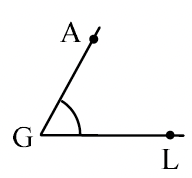',opts:['<span dir="ltr">∡GAL</span>','<span dir="ltr">∡AGL</span>','<span dir="ltr">∡LAG</span>','<span dir="ltr">∡GLA</span>'],ans:1,exp:'הקודקוד הוא G — הוא חייב להיות האות <strong>האמצעית</strong>. לכן: <span dir="ltr">∡AGL</span> (גם <span dir="ltr">∡LGA</span> נכון).'},
  {q:'<div style="margin-bottom:8px;">הסתכלו בסרטוט — מה הכתיב הנכון של הזווית המסומנת?</div>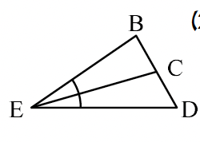',opts:['<span dir="ltr">∡EBD</span>','<span dir="ltr">∡BED</span>','<span dir="ltr">∡DBE</span>','<span dir="ltr">∡BDE</span>'],ans:1,exp:'הקודקוד הוא E — האות האמצעית. לכן: <span dir="ltr">∡BED</span> (גם <span dir="ltr">∡DEB</span> נכון).'},
  {q:'<div style="margin-bottom:8px;">הסתכלו בסרטוט — מה הכתיב הנכון של הזווית המסומנת?</div>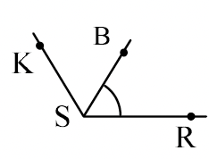',opts:['<span dir="ltr">∡SBR</span>','<span dir="ltr">∡RBS</span>','<span dir="ltr">∡BSR</span>','<span dir="ltr">∡BRS</span>'],ans:2,exp:'הקודקוד הוא S — האות האמצעית. לכן: <span dir="ltr">∡BSR</span> (גם <span dir="ltr">∡RSB</span> נכון).'},
  {q:'<div style="margin-bottom:8px;">הסתכלו בסרטוט — מה הכתיב הנכון של הזווית המסומנת?</div>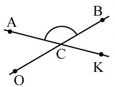',opts:['<span dir="ltr">∡CAB</span>','<span dir="ltr">∡ACB</span>','<span dir="ltr">∡ABC</span>','<span dir="ltr">∡BAC</span>'],ans:1,exp:'הקודקוד הוא C — האות האמצעית. לכן: <span dir="ltr">∡ACB</span> (גם <span dir="ltr">∡BCA</span> נכון).'},
  {q:'<div style="margin-bottom:8px;">נכון או לא נכון?<br>ל-<span dir="ltr" style="font-size:1.5em;font-weight:700;">∡1</span> ניתן לקרוא <span dir="ltr" style="font-size:1.5em;font-weight:700;">∡D</span></div>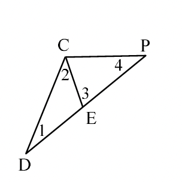',opts:['נכון','לא נכון — D אינו הקודקוד','לא נכון — יש 2 זוויות ב-D','לא נכון — חייבים 3 אותיות תמיד'],ans:0,exp:'ב-D נפגשות רק שתי קרניים, כלומר יש שם רק זווית אחת (<span dir="ltr">∡1</span>). לכן <span dir="ltr">∡D</span> ברורה וחד-משמעית — הטענה נכונה.'},
  {q:'<div style="margin-bottom:8px;">נכון או לא נכון?<br>ל-<span dir="ltr" style="font-size:1.5em;font-weight:700;">∡2</span> ניתן לקרוא <span dir="ltr" style="font-size:1.5em;font-weight:700;">∡C</span></div>',opts:['נכון','לא נכון — C אינו הקודקוד','לא נכון — ב-C יש יותר מזווית אחת','לא נכון — צריך רק 2 אותיות'],ans:2,exp:'ב-C נפגשות שלוש קרניים (CD, CE, CP) — כלומר יש שם יותר מזווית אחת. <span dir="ltr">∡C</span> עמומה! צריך לרשום 3 אותיות, לדוגמה: <span dir="ltr">∡DCE</span>.'},
];

const gameLevels3 = [
  {q:'<div style="margin-bottom:8px;">מה גודל <span dir="ltr" style="font-size:1.3em;font-weight:700;">α</span>?</div>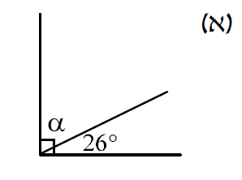',opts:['64°','26°','116°','54°'],ans:0,exp:'זווית ישרה = 90°. לכן α = 90° − 26° = 64°.'},
  {q:'<div style="margin-bottom:8px;">מה גודל <span dir="ltr" style="font-size:1.3em;font-weight:700;">α</span>?</div>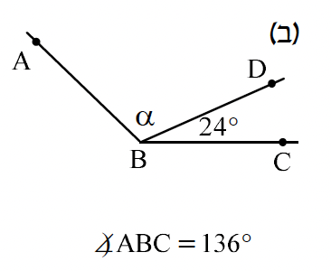',opts:['24°','136°','112°','160°'],ans:2,exp:'<span dir="ltr">∡ABC = 136°</span>. לכן α = 136° − 24° = 112°.'},
  {q:'<div style="margin-bottom:8px;">מה גודל <span dir="ltr" style="font-size:1.3em;font-weight:700;">α</span>?</div>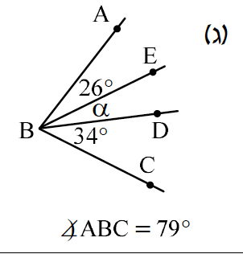',opts:['45°','19°','9°','39°'],ans:1,exp:'26° + α + 34° = 79°. לכן α = 79° − 60° = 19°.'},
  {q:'<div style="margin-bottom:8px;">הסתכלו בסרטוט — איזו טענה נכונה?</div>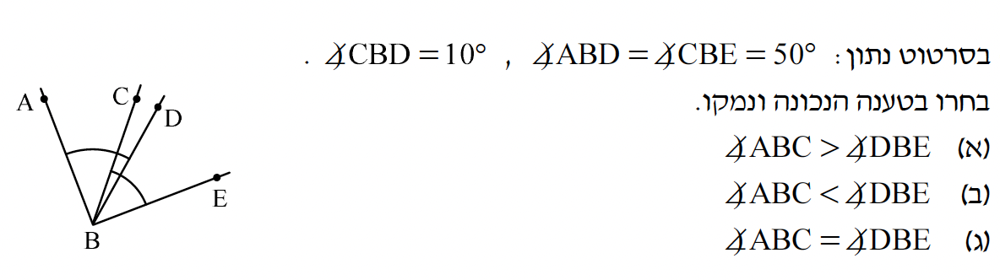',opts:['<span dir="ltr">∡ABC > ∡DBE</span>','<span dir="ltr">∡ABC < ∡DBE</span>','<span dir="ltr">∡ABC = ∡DBE</span>','לא ניתן לדעת'],ans:2,exp:'<span dir="ltr">∡ABC = ∡ABD + ∡DBC = 50° + 10° = 60°</span>. <span dir="ltr">∡DBE = ∡DBC + ∡CBE = 10° + 50° = 60°</span>. לכן שתי הזוויות שוות.'},
];

const IMG4S = '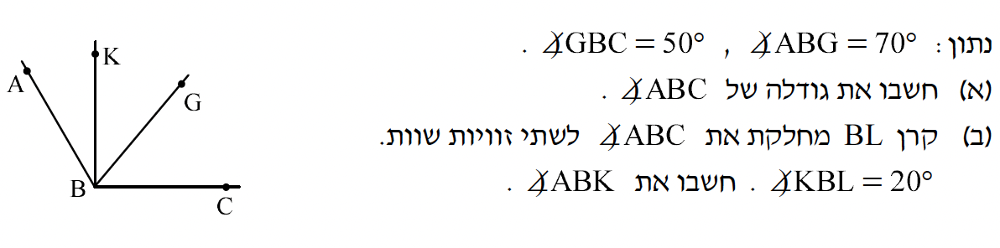';
const IMG4H = '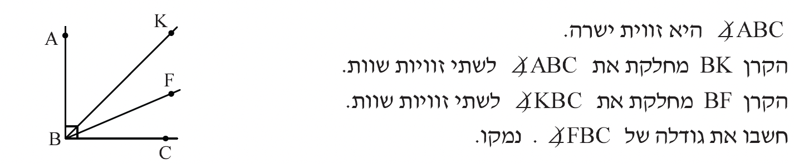';
const A4 = s => s.replace(/∡/g,'<span data-angsized="1" style="font-size:1.8em;font-weight:700;line-height:1;">∡</span>');
const gameLevels4 = [
  {q:IMG4S+'<div style="margin-top:4px;">'+A4('נתון <span dir="ltr">∡ABG=70°</span>, <span dir="ltr">∡GBC=50°</span>. מה גודל <span dir="ltr">∡ABC</span>?')+'</div>',opts:['50°','70°','120°','140°'],ans:2,exp:A4('<span dir="ltr">∡ABC = ∡ABG + ∡GBC = 70° + 50° = 120°</span>.')},
  {q:IMG4S+'<div style="margin-top:4px;">'+A4('קרן BL מחלקת את <span dir="ltr">∡ABC</span> לשתי זוויות שוות. <span dir="ltr">∡KBL = 20°</span>. מה <span dir="ltr">∡ABK</span>?')+'</div>',opts:['20°','40°','60°','80°'],ans:1,exp:A4('BL חוצה: <span dir="ltr">∡ABL = 120°÷2 = 60°</span>. <span dir="ltr">∡ABK = ∡ABL − ∡KBL = 60° − 20° = 40°</span>.')},
  {q:IMG4H+'<div style="margin-top:4px;">'+A4('<span dir="ltr">∡ABC</span> היא זווית ישרה. BK מחלקת אותה לשתי זוויות שוות. מה <span dir="ltr">∡KBC</span>?')+'</div>',opts:['90°','60°','45°','30°'],ans:2,exp:A4('חוצה-זווית של 90°: <span dir="ltr">∡KBC = 90°÷2 = 45°</span>.')},
  {q:IMG4H+'<div style="margin-top:4px;">'+A4('BF מחלקת את <span dir="ltr">∡KBC</span> לשתי זוויות שוות. מה <span dir="ltr">∡FBC</span>?')+'</div>',opts:['45°','30°','22.5°','15°'],ans:2,exp:A4('<span dir="ltr">∡KBC = 45°</span>. BF חוצה אותה: <span dir="ltr">∡FBC = 45°÷2 = 22.5°</span>.')},
];

const IMG5A = '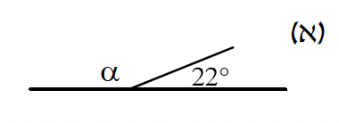';
const IMG5B = '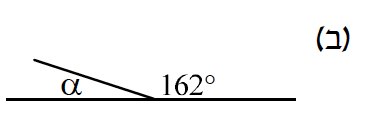';
const _IMG5B_SVG = _wsvg('<svg viewBox="-5 0 350 105" xmlns="http://www.w3.org/2000/svg"><rect x="-5" y="0" width="350" height="105" fill="#fff"/><line x1="5" y1="85" x2="335" y2="85" stroke="#000" stroke-width="1.6" stroke-linecap="round"/><line x1="120" y1="85" x2="34" y2="57" stroke="#000" stroke-width="1.6" stroke-linecap="round"/><path d="M95,85 A25,25 0 0 0 96.2,77.3" fill="none" stroke="#d35400" stroke-width="1.5"/><text x="78" y="72" font-family="Times New Roman" font-size="15" font-weight="bold" fill="#d35400" text-anchor="middle" dominant-baseline="central">α</text><path d="M170,85 A50,50 0 0 0 72.5,69.6" fill="none" stroke="#2471a3" stroke-width="1.5"/><text x="205" y="53" font-family="Times New Roman" font-size="15" fill="#2471a3" text-anchor="middle" dominant-baseline="central">162°</text></svg>');
const IMG5C = '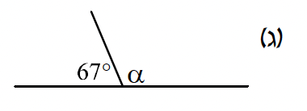';
const IMG5BI = '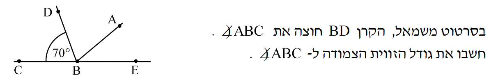';
const IMG5T1 = '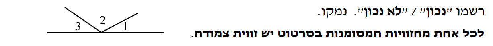';
const IMG5T2 = '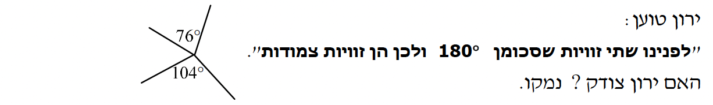';
const A5 = s => s.replace(/∡/g,'<span data-angsized="1" style="font-size:1.8em;font-weight:700;line-height:1;">∡</span>');
const gameLevels5 = [
  {q:IMG5A+'<div style="margin-top:4px;">'+A5('מה גודל <span dir="ltr">α</span>?')+'</div>',opts:['22°','158°','68°','148°'],ans:1,exp:A5('זוויות צמודות — סכומן 180°. לכן α = 180° − 22° = 158°.')},
  {q:_IMG5B_SVG+'<div style="margin-top:4px;">'+A5('מה גודל <span dir="ltr" style="color:#d35400;font-weight:bold;">α</span>?')+'</div>',opts:['62°','162°','28°','18°'],ans:3,exp:A5('α + 162° = 180° → α = 180° − 162° = 18°.')},
  {q:IMG5C+'<div style="margin-top:4px;">'+A5('מה גודל <span dir="ltr">α</span>?')+'</div>',opts:['67°','123°','103°','113°'],ans:3,exp:A5('67° + α = 180° → α = 180° − 67° = 113°.')},
  {q:IMG5BI+'<div style="margin-top:4px;">'+A5('מה גודל הזווית הצמודה ל-<span dir="ltr">∡ABC</span>?')+'</div>',opts:['70°','35°','110°','140°'],ans:2,exp:A5('זוויות צמודות — סכומן 180°. <span dir="ltr">∡ABC = 70°</span>, לכן הצמודה = 180° − 70° = 110°.')},
  {q:IMG5T1+'<div style="margin-top:4px;">נכון או לא נכון? לכל אחת מהזוויות המסומנות בסרטוט יש זווית צמודה.</div>',opts:['נכון — לכל שלוש יש צמודה','לא נכון — '+A5('ל-∡2 אין זווית צמודה'),'לא נכון — אף זווית אינה צמודה','נכון — כי הן על קו ישר'],ans:1,exp:A5('∡1 ו-∡3 כל אחת בין קרן לבין חלק קו ישר — כן יש להן צמודה. ∡2 בין שתי קרניים בלבד — אין לה זווית צמודה.')},
  {q:IMG5T2+'<div style="margin-top:4px;">ירון טוען: "לפנינו שתי זוויות שסכומן 180°, ולכן הן זוויות צמודות." האם ירון צודק?</div>',opts:['כן — כל זוג זוויות שסכומן 180° הן צמודות','לא — סכום 180° לא מספיק; צמודות חייבות להיות על קו ישר עם קרן','כן — כי 76°+104°=180°','לא — הן לא שוות'],ans:1,exp:'ירון טועה. זוויות צמודות הן קרן היוצאת מנקודה על קו ישר ויוצרת שתי זוויות. כאן שתי הזוויות נמצאות בחיתוך של שני קווים — לא על קו ישר עם קרן אחת.'},
];

const IMG6SA = '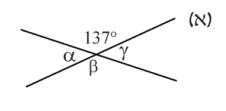';
const IMG6SB = '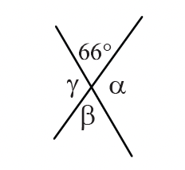';
const IMG6BD = '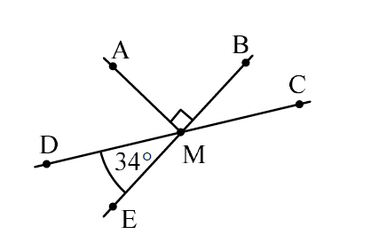';
const IMG6L3 = '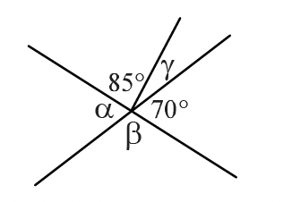';
const IMG6XP = '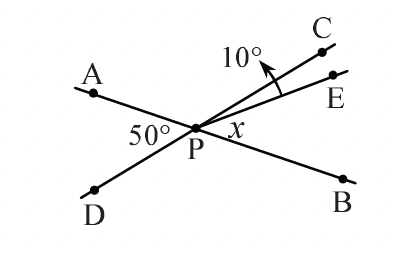';
const A6 = s => s.replace(/∡/g,'<span data-angsized="1" style="font-size:1.8em;font-weight:700;line-height:1;">∡</span>');
const gameLevels6 = [
  {q:IMG6SA+'<div style="margin-top:4px;">מה גודל α?</div>',opts:['137°','47°','43°','53°'],ans:2,exp:'α צמודה ל-137°, לכן α = 180° − 137° = 43°.'},
  {q:IMG6SB+'<div style="margin-top:4px;">מה גודל α?</div>',opts:['66°','104°','114°','24°'],ans:2,exp:'α קודקודית ל-66° — שתיהן מול אחת לשנייה בחיתוך. לכן α = 180° − 66° = 114°... רגע — α צמודה ל-66°: 180° − 66° = 114°.'},
  {q:IMG6BD+'<div style="margin-top:4px;">'+A6('BE⊥MA בחיתוך. <span dir="ltr">∡EMD=34°</span>. מה גודל <span dir="ltr">∡AMD</span>?')+'</div>',opts:['34°','90°','46°','124°'],ans:3,exp:A6('<span dir="ltr">∡AME = 90°</span> (BE⊥MA). <span dir="ltr">∡AMD = ∡AME + ∡EMD = 90° + 34° = 124°</span>.')},
  {q:IMG6L3+'<div style="margin-top:4px;">מי הזווית הקדקודית ל-70°?</div>',opts:['γ','α','β','85°'],ans:1,exp:'α ו-70° נמצאות מול אחת לשנייה בחיתוך הישרים — הן זוויות קודקודיות ושוות. לכן α = 70°.'},
  {q:IMG6XP+'<div style="margin-top:4px;">'+A6('A, P, B הם על קו ישר. <span dir="ltr">∡APD=50°</span>, <span dir="ltr">∡CPE=10°</span>. מה ערכו של x?')+'</div>',opts:['50°','40°','30°','60°'],ans:1,exp:A6('הזווית הקודקודית ל-<span dir="ltr">∡APD</span> היא <span dir="ltr">∡BPC = 50°</span>. <span dir="ltr">x = ∡BPE = ∡BPC − ∡CPE = 50° − 10° = 40°</span>.')},
];

const IMG7A = '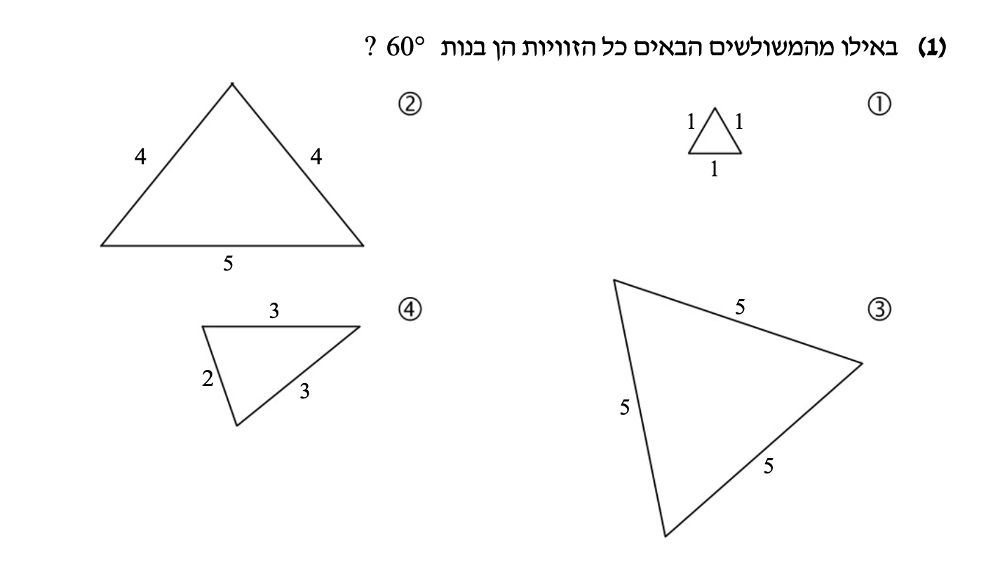';
const IMG7N = '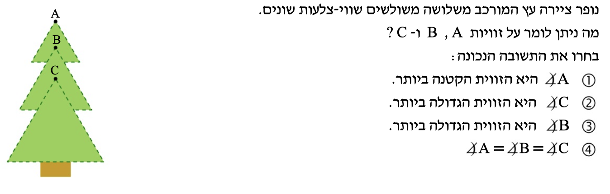';
const IMG7C = '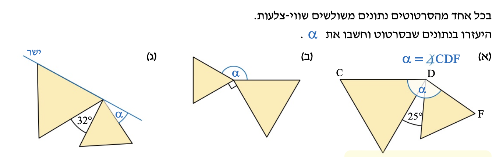';
const IMG7E = '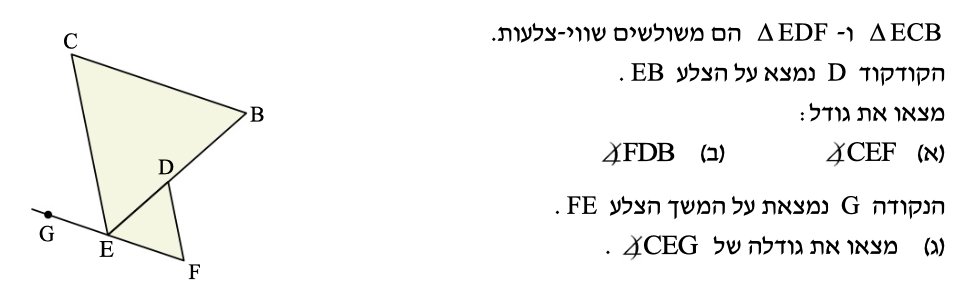';
const IMG7V = '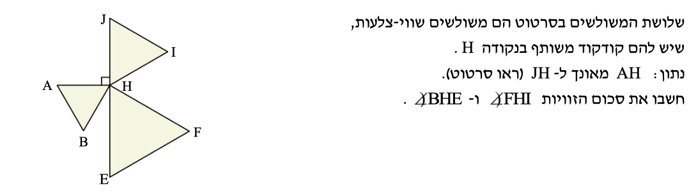';

const gameLevels7 = [
  {q:'כמה מעלות יש בכל זווית של משולש שווה-צלעות?',opts:['45°','60°','90°','120°'],ans:1,exp:'משולש שווה-צלעות הוא גם שווה-זוויות. סכום הזוויות = 180°, ולכן כל זווית = 180° ÷ 3 = 60°.'},
  {q:IMG7A+'<div style="font-size:17px;font-weight:700;text-align:center;">באילו מהמשולשים כל הזוויות הן בנות 60°?</div>',opts:['1 ו-3','1 ו-2','2 ו-3','2 ו-4'],ans:0,exp:'משולש 1 (כל הצלעות = 1) ומשולש 3 (כל הצלעות = 5) הם שווה-צלעות — לכן כל זוויותיהם 60°. משולשים 2 ו-4 הם שווה-שוקיים אך לא שווה-צלעות.'},
  {q:IMG7N+'<div style="font-size:17px;font-weight:700;text-align:center;">נופר ציירה עץ משלושה משולשים שווי-צלעות בגדלים שונים. מה ניתן לומר על ∠A, ∠B ו-∠C?</div>',opts:['∠A הקטנה ביותר','∠C הגדולה ביותר','∠B הגדולה ביותר','∠A = ∠B = ∠C'],ans:3,exp:'בכל משולש שווה-צלעות — גדול או קטן — כל זווית = 60°. גודל הצלעות לא משפיע על גודל הזוויות. לכן ∠A = ∠B = ∠C = 60°.'},
  {q:IMG7C+'<div style="font-size:17px;font-weight:700;text-align:center;">הסתכלו בסרטוט <strong>(ג)</strong> — מה גודל α?</div>',opts:['28°','32°','88°','92°'],ans:0,exp:'הישר עובר דרך קדקוד המשולש. הזווית הפנימית של המשולש השווה-צלעות = 60°. α = 60° − 32° = 28°.'},
  {q:IMG7E+'<div style="font-size:17px;font-weight:700;text-align:center;">△ECB ו-△EDF שווי-צלעות, D נמצא על EB. מה גודל ∠CEF?</div>',opts:['60°','90°','120°','150°'],ans:2,exp:'∠CEB = 60° (△ECB שווה-צלעות). D נמצא על EB, לכן קרן ED = קרן EB ו-∠DEF = 60° (△EDF שווה-צלעות). ∠CEF = ∠CEB + ∠DEF = 60° + 60° = 120°.'},
  {q:IMG7E+'<div style="font-size:17px;font-weight:700;text-align:center;">△ECB ו-△EDF שווי-צלעות, D נמצא על EB. מה גודל ∠FDB?</div>',opts:['60°','90°','120°','150°'],ans:2,exp:'∠EDF = 60° (△EDF שווה-צלעות). D נמצא על EB — לכן ∠EDF ו-∠FDB הן זוויות על קו ישר: ∠FDB = 180° − 60° = 120°.'},
  {q:IMG7E+'<div style="font-size:17px;font-weight:700;text-align:center;">G נמצאת על המשך הצלע FE מעבר ל-E. מה גודל ∠CEG?</div>',opts:['60°','90°','120°','150°'],ans:0,exp:'∠CEF = 120° (מהשאלה הקודמת). G על המשך FE — לכן ∠CEG ו-∠CEF הן זוויות צמודות: ∠CEG = 180° − 120° = 60°.'},
  {q:IMG7V+'<div style="font-size:17px;font-weight:700;text-align:center;">שלושה משולשים שווי-צלעות חולקים קודקוד H, AH ⊥ JH. מה גודל ∠FHI + ∠BHE?</div>',opts:['60°','90°','120°','150°'],ans:1,exp:'סביב נקודה H כל הזוויות = 360°. שלוש זוויות של משולשים שווי-צלעות = 3 × 60° = 180°. זווית ישרה ∠AHJ = 90°. לכן ∠FHI + ∠BHE = 360° − 180° − 90° = 90°.'},
];


const _n = s => '<span dir="ltr">'+s+'</span>';

// seq8 SVGs from isosceles worksheet
const _S8vxw = _wsvg('<svg viewBox="-48 -258 246 305" role="img" xmlns="http://www.w3.org/2000/svg"><rect x="-48" y="-258" width="246" height="305" fill="#fff"/><line x1="0.0" y1="-0.0" x2="150.0" y2="-0.0" stroke="#000" stroke-width="2.6" stroke-linecap="round"/><line x1="150.0" y1="-0.0" x2="75.0" y2="-206.1" stroke="#000" stroke-width="2.6" stroke-linecap="round"/><line x1="75.0" y1="-206.1" x2="0.0" y2="-0.0" stroke="#000" stroke-width="2.6" stroke-linecap="round"/><line x1="30.9" y1="-105.4" x2="44.1" y2="-100.6" stroke="#000" stroke-width="1.4"/><line x1="105.9" y1="-100.6" x2="119.1" y2="-105.4" stroke="#000" stroke-width="1.4"/><text x="-11.8" y="10.8" class="lbl" text-anchor="middle" dominant-baseline="central">V</text><text x="161.8" y="10.8" class="lbl" text-anchor="middle" dominant-baseline="central">X</text><text x="75.0" y="-222.1" class="lbl" text-anchor="middle" dominant-baseline="central">W</text></svg>');
const _S8deh = _wsvg('<svg viewBox="-202 -49 247 282" role="img" xmlns="http://www.w3.org/2000/svg"><rect x="-202" y="-49" width="247" height="282" fill="#fff"/><line x1="0.0" y1="0.0" x2="-150.4" y2="54.7" stroke="#000" stroke-width="2.6" stroke-linecap="round"/><line x1="-150.4" y1="54.7" x2="-19.1" y2="181.5" stroke="#000" stroke-width="2.6" stroke-linecap="round"/><line x1="-19.1" y1="181.5" x2="0.0" y2="0.0" stroke="#000" stroke-width="2.6" stroke-linecap="round"/><line x1="-2.8" y1="94.0" x2="-16.8" y2="92.5" stroke="#000" stroke-width="1.4"/><line x1="-2.3" y1="89.0" x2="-16.2" y2="87.5" stroke="#000" stroke-width="1.4"/><line x1="-78.1" y1="114.8" x2="-87.8" y2="124.9" stroke="#000" stroke-width="1.4"/><line x1="-81.6" y1="111.3" x2="-91.4" y2="121.4" stroke="#000" stroke-width="1.4"/><text x="9.3" y="-13.0" class="lbl" text-anchor="middle" dominant-baseline="central">E</text><text x="-165.9" y="50.8" class="lbl" text-anchor="middle" dominant-baseline="central">H</text><text x="-13.6" y="196.5" class="lbl" text-anchor="middle" dominant-baseline="central">D</text></svg>');
const _S8dhy = _wsvg('<svg viewBox="-126 -212 376 264" role="img" xmlns="http://www.w3.org/2000/svg"><rect x="-126" y="-212" width="376" height="264" fill="#fff"/><path d="M0.0,-0.0 L13.8,-22.0 A26,26 0 0 0 -26.0,-0.0 Z" fill="#FFE0B8" stroke="none"/><path d="M100.0,-160.0 L85.2,-136.3 A28,28 0 0 0 114.8,-136.3 Z" fill="#D6E6F8" stroke="none"/><line x1="-90.0" y1="-0.0" x2="200.0" y2="-0.0" stroke="#000" stroke-width="2.6" stroke-linecap="round"/><line x1="100.0" y1="-160.0" x2="0.0" y2="-0.0" stroke="#000" stroke-width="2.6" stroke-linecap="round"/><line x1="100.0" y1="-160.0" x2="200.0" y2="-0.0" stroke="#000" stroke-width="2.6" stroke-linecap="round"/><line x1="44.1" y1="-83.7" x2="55.9" y2="-76.3" stroke="#000" stroke-width="1.4"/><line x1="144.1" y1="-76.3" x2="155.9" y2="-83.7" stroke="#000" stroke-width="1.4"/><circle cx="-90.0" cy="-0.0" r="3" fill="#000"/><path d="M85.2,-136.3 A28,28 0 0 0 114.8,-136.3" fill="none" stroke="#2C6CB0" stroke-width="1.6"/><text x="100.0" y="-114.0" class="ang" text-anchor="middle" dominant-baseline="central">64°</text><path d="M13.8,-22.0 A26,26 0 0 0 -26.0,-0.0" fill="none" stroke="#C2630A" stroke-width="1.6"/><text x="-20.4" y="-36.7" class="ang" text-anchor="middle" dominant-baseline="central">α</text><text x="100.0" y="-176.0" class="lbl" text-anchor="middle" dominant-baseline="central">D</text><text x="214.1" y="7.5" class="lbl" text-anchor="middle" dominant-baseline="central">Y</text><text x="0.0" y="16.0" class="lbl" text-anchor="middle" dominant-baseline="central">H</text><text x="-90.0" y="16.0" class="lbl" text-anchor="middle" dominant-baseline="central">Z</text></svg>');
const _S8pqr = _wsvg('<svg viewBox="-116 -195 366 286" role="img" xmlns="http://www.w3.org/2000/svg"><rect x="-116" y="-195" width="366" height="286" fill="#fff"/><path d="M0.0,-0.0 L-12.6,18.0 A22,22 0 0 0 22.0,0.0 Z" fill="#FFE0B8" stroke="none"/><path d="M0.0,-0.0 L-26.0,0.0 A26,26 0 0 0 -14.9,21.3 Z" fill="#FFE0B8" stroke="none"/><path d="M100.0,-142.8 L83.9,-119.9 A28,28 0 0 0 116.1,-119.9 Z" fill="#D6E6F8" stroke="none"/><line x1="-90.0" y1="-0.0" x2="200.0" y2="-0.0" stroke="#000" stroke-width="2.6" stroke-linecap="round"/><line x1="100.0" y1="-142.8" x2="-45.9" y2="65.5" stroke="#000" stroke-width="2.6" stroke-linecap="round"/><line x1="100.0" y1="-142.8" x2="200.0" y2="-0.0" stroke="#000" stroke-width="2.6" stroke-linecap="round"/><line x1="39.3" y1="-68.3" x2="50.7" y2="-60.3" stroke="#000" stroke-width="1.4"/><line x1="139.3" y1="-74.5" x2="150.7" y2="-82.6" stroke="#000" stroke-width="1.4"/><path d="M83.9,-119.9 A28,28 0 0 0 116.1,-119.9" fill="none" stroke="#2C6CB0" stroke-width="1.6"/><text x="100.0" y="-96.8" class="ang" text-anchor="middle" dominant-baseline="central">70°</text><path d="M-26.0,0.0 A26,26 0 0 0 -14.9,21.3" fill="none" stroke="#C2630A" stroke-width="1.6"/><text x="-39.0" y="20.3" class="ang" text-anchor="middle" dominant-baseline="central">α</text><path d="M-12.6,18.0 A22,22 0 0 0 22.0,0.0" fill="none" stroke="#C2630A" stroke-width="1.6"/><text x="18.5" y="35.5" class="ang" text-anchor="middle" dominant-baseline="central">β</text><text x="100.0" y="-158.8" class="lbl" text-anchor="middle" dominant-baseline="central">P</text><text x="214.4" y="6.9" class="lbl" text-anchor="middle" dominant-baseline="central">R</text><text x="-16.4" y="-11.5" class="lbl" text-anchor="middle" dominant-baseline="central">Q</text></svg>');
const _S8tuv = _wsvg('<svg viewBox="-44 -301 295 351" role="img" xmlns="http://www.w3.org/2000/svg"><rect x="-44" y="-301" width="295" height="351" fill="#fff"/><path d="M0.0,-0.0 L21.8,-33.5 A40,40 0 0 0 0.7,-40.0 Z" fill="#FFE0B8" stroke="none"/><path d="M4.4,-250.9 L3.9,-222.9 A28,28 0 0 0 26.1,-233.3 Z" fill="#D6E6F8" stroke="none"/><line x1="0.0" y1="-0.0" x2="199.4" y2="-93.0" stroke="#000" stroke-width="2.6" stroke-linecap="round"/><line x1="199.4" y1="-93.0" x2="4.4" y2="-250.9" stroke="#000" stroke-width="2.6" stroke-linecap="round"/><line x1="4.4" y1="-250.9" x2="0.0" y2="-0.0" stroke="#000" stroke-width="2.6" stroke-linecap="round"/><line x1="0.0" y1="-0.0" x2="108.3" y2="-166.7" stroke="#000" stroke-width="2.0" stroke-dasharray="6 5" stroke-linecap="round"/><line x1="-4.8" y1="-125.6" x2="9.2" y2="-125.3" stroke="#000" stroke-width="1.4"/><line x1="97.5" y1="-166.5" x2="106.3" y2="-177.4" stroke="#000" stroke-width="1.4"/><path d="M3.9,-222.9 A28,28 0 0 0 26.1,-233.3" fill="none" stroke="#2C6CB0" stroke-width="1.6"/><text x="23.8" y="-209.2" class="ang" text-anchor="middle" dominant-baseline="central">52°</text><path d="M21.8,-33.5 A40,40 0 0 0 0.7,-40.0" fill="none" stroke="#C2630A" stroke-width="1.6"/><text x="16.4" y="-53.6" class="ang" text-anchor="middle" dominant-baseline="central">β</text><text x="-8.2" y="13.8" class="lbl" text-anchor="middle" dominant-baseline="central">U</text><text x="215.2" y="-90.4" class="lbl" text-anchor="middle" dominant-baseline="central">V</text><text x="-2.4" y="-265.4" class="lbl" text-anchor="middle" dominant-baseline="central">T</text><text x="116.5" y="-179.3" class="lbl" text-anchor="middle" dominant-baseline="central">W</text></svg>');
const _S8ghn = _wsvg('<svg viewBox="-52 -209 332 314" role="img" xmlns="http://www.w3.org/2000/svg"><rect x="-52" y="-209" width="332" height="314" fill="#fff"/><path d="M162.9,-157.3 L144.2,-139.2 A26,26 0 0 0 170.9,-132.6 Z" fill="#FFE0B8" stroke="none"/><path d="M232.9,58.1 L200.7,28.1 A44,44 0 0 0 190.2,47.4 Z" fill="#D6E6F8" stroke="none"/><line x1="0.0" y1="-0.0" x2="232.9" y2="58.1" stroke="#000" stroke-width="2.6" stroke-linecap="round"/><line x1="232.9" y1="58.1" x2="162.9" y2="-157.3" stroke="#000" stroke-width="2.6" stroke-linecap="round"/><line x1="162.9" y1="-157.3" x2="0.0" y2="-0.0" stroke="#000" stroke-width="2.6" stroke-linecap="round"/><line x1="232.9" y1="58.1" x2="83.8" y2="-80.9" stroke="#000" stroke-width="2.0" stroke-dasharray="6 5" stroke-linecap="round"/><line x1="76.6" y1="-83.7" x2="86.3" y2="-73.6" stroke="#000" stroke-width="1.4"/><line x1="191.2" y1="-47.5" x2="204.5" y2="-51.8" stroke="#000" stroke-width="1.4"/><path d="M200.7,28.1 A44,44 0 0 0 190.2,47.4" fill="none" stroke="#2C6CB0" stroke-width="1.6"/><text x="176.6" y="27.5" class="ang" text-anchor="middle" dominant-baseline="central">29°</text><path d="M144.2,-139.2 A26,26 0 0 0 170.9,-132.6" fill="none" stroke="#C2630A" stroke-width="1.6"/><text x="152.7" y="-116.6" class="ang" text-anchor="middle" dominant-baseline="central">α</text><text x="-15.5" y="3.9" class="lbl" text-anchor="middle" dominant-baseline="central">H</text><text x="244.7" y="68.8" class="lbl" text-anchor="middle" dominant-baseline="central">N</text><text x="166.8" y="-172.8" class="lbl" text-anchor="middle" dominant-baseline="central">G</text><text x="72.8" y="-91.2" class="lbl" text-anchor="middle" dominant-baseline="central">X</text></svg>');
const _S8rst = _wsvg('<svg viewBox="-45 -522 289 572" role="img" xmlns="http://www.w3.org/2000/svg"><rect x="-45" y="-522" width="289" height="572" fill="#fff"/><path d="M100.0,-470.5 L93.8,-441.1 A30,30 0 0 0 106.2,-441.1 Z" fill="#FFE0B8" stroke="none"/><path d="M0.0,-0.0 L26.0,-45.0 A52,52 0 0 0 10.8,-50.9 Z" fill="#D6E6F8" stroke="none"/><line x1="100.0" y1="-470.5" x2="0.0" y2="-0.0" stroke="#000" stroke-width="2.6" stroke-linecap="round"/><line x1="0.0" y1="-0.0" x2="200.0" y2="-0.0" stroke="#000" stroke-width="2.6" stroke-linecap="round"/><line x1="200.0" y1="-0.0" x2="100.0" y2="-470.5" stroke="#000" stroke-width="2.6" stroke-linecap="round"/><line x1="0.0" y1="-0.0" x2="100.0" y2="-173.2" stroke="#000" stroke-width="2.6" stroke-linecap="round"/><line x1="100.0" y1="-173.2" x2="200.0" y2="-0.0" stroke="#000" stroke-width="2.6" stroke-linecap="round"/><line x1="53.7" y1="-286.2" x2="67.4" y2="-283.3" stroke="#000" stroke-width="1.4"/><line x1="52.6" y1="-281.3" x2="66.3" y2="-278.4" stroke="#000" stroke-width="1.4"/><line x1="132.6" y1="-283.3" x2="146.3" y2="-286.2" stroke="#000" stroke-width="1.4"/><line x1="133.7" y1="-278.4" x2="147.4" y2="-281.3" stroke="#000" stroke-width="1.4"/><line x1="51.1" y1="-74.4" x2="38.9" y2="-81.4" stroke="#000" stroke-width="1.4"/><line x1="148.9" y1="-74.4" x2="161.1" y2="-81.4" stroke="#000" stroke-width="1.4"/><line x1="100.0" y1="7.0" x2="100.0" y2="-7.0" stroke="#000" stroke-width="1.4"/><path d="M26.0,-45.0 A52,52 0 0 0 10.8,-50.9" fill="none" stroke="#2C6CB0" stroke-width="1.6"/><text x="25.8" y="-67.2" class="ang" text-anchor="middle" dominant-baseline="central">18°</text><path d="M93.8,-441.1 A30,30 0 0 0 106.2,-441.1" fill="none" stroke="#C2630A" stroke-width="1.6"/><text x="100.0" y="-424.5" class="ang" text-anchor="middle" dominant-baseline="central">α</text><text x="100.0" y="-486.5" class="lbl" text-anchor="middle" dominant-baseline="central">R</text><text x="-8.6" y="13.5" class="lbl" text-anchor="middle" dominant-baseline="central">S</text><text x="208.6" y="13.5" class="lbl" text-anchor="middle" dominant-baseline="central">T</text><text x="100.0" y="-189.2" class="lbl" text-anchor="middle" dominant-baseline="central">U</text></svg>');

const gameLevels8 = [
  // 1 — VXW: זיהוי זוויות שוות
  {q:_S8vxw+'<div style="font-size:17px;font-weight:700;text-align:center;">ב-'+_n('△VXW')+' שווה-שוקיים — הצלעות השוות מסומנות בקו קטן. אילו זוויות שוות?</div>',
   opts:[_n('∠V = ∠X'),_n('∠V = ∠W'),_n('∠W = ∠X'),'כל הזוויות שוות'],ans:0,
   exp:'הצלעות השוות יוצאות מ-W (ראש המשולש). לכן זוויות הבסיס — '+_n('∠V')+' ו-'+_n('∠X')+' — שוות.'},
  // 2 — DEH: זיהוי שוקיים ובסיס (DE=DH)
  {q:_S8deh+'<div style="font-size:17px;font-weight:700;text-align:center;">ב-'+_n('△DEH')+' שווה-שוקיים ('+_n('DE=DH')+') — מה הן זוויות הבסיס?</div>',
   opts:[_n('∠E ו-∠H'),_n('∠D ו-∠E'),_n('∠D ו-∠H'),'כל הזוויות שוות'],ans:0,
   exp:'D הוא ראש המשולש (ממנו יוצאות הצלעות השוות). זוויות הבסיס הן '+_n('∠E')+' ו-'+_n('∠H')+' — הן שוות.'},
  // 3 — DEH: מה שוויון נכון
  {q:_S8deh+'<div style="font-size:17px;font-weight:700;text-align:center;">'+_n('△DEH')+' שווה-שוקיים ('+_n('DE=DH')+'), המשולש אינו שווה-צלעות. איזה שוויון נכון?</div>',
   opts:[_n('∠E = ∠H'),_n('∠D = ∠E'),_n('∠D = ∠H'),'אין שוויון'],ans:0,
   exp:'הצלעות השוות יוצאות מ-D. זוויות הבסיס שמולן שוות: '+_n('∠E = ∠H')+'.'},
  // 4 — DHY: חישוב זווית חיצונית α (∠D=64°)
  {q:_S8dhy+'<div style="font-size:17px;font-weight:700;text-align:center;">'+_n('△DHY')+' שווה-שוקיים ('+_n('DH=DY')+'), '+_n('∠D=64°')+'. Z על המשך הבסיס. מה גודל α?</div>',
   opts:['58°','116°','122°','128°'],ans:2,
   exp:'זוויות הבסיס: '+_n('(180°−64°)÷2=58°')+'. α צמודה לזווית הבסיס ב-H: '+_n('α=180°−58°=122°')+'.'},
  // 5 — PQR: חישוב α (∠P=70°)
  {q:_S8pqr+'<div style="font-size:17px;font-weight:700;text-align:center;">'+_n('△PQR')+' שווה-שוקיים ('+_n('PQ=PR')+'), '+_n('∠P=70°')+'. הוארכו הבסיס והשוק מעבר ל-Q. מה גודל α?</div>',
   opts:['55°','70°','110°','125°'],ans:0,
   exp:'זוויות הבסיס: '+_n('(180°−70°)÷2=55°')+'. α קודקודית לזווית הבסיס ב-Q: '+_n('α=55°')+'.'},
  // 6 — PQR: חישוב β (∠P=70°)
  {q:_S8pqr+'<div style="font-size:17px;font-weight:700;text-align:center;">'+_n('△PQR')+' שווה-שוקיים ('+_n('PQ=PR')+'), '+_n('∠P=70°')+'. מה גודל β?</div>',
   opts:['55°','70°','110°','125°'],ans:3,
   exp:'זווית הבסיס ב-Q = 55°. β צמודה לה: '+_n('β=180°−55°=125°')+'.'},
  // 7 — TUV: חוצה זווית בסיס (∠T=52°)
  {q:_S8tuv+'<div style="font-size:17px;font-weight:700;text-align:center;">'+_n('△TUV')+' שווה-שוקיים ('+_n('TU=TV')+'), '+_n('∠T=52°')+'. UW חוצה את '+_n('∠U')+'. מה גודל β = '+_n('∠TUW')+'?</div>',
   opts:['26°','32°','52°','64°'],ans:1,
   exp:'זוויות הבסיס: '+_n('(180°−52°)÷2=64°')+'. UW חוצה '+_n('∠U')+': '+_n('β=64°÷2=32°')+'.'},
  // 8 — GHN: מחוצה לזווית הראש (∠XNH=29°)
  {q:_S8ghn+'<div style="font-size:17px;font-weight:700;text-align:center;">'+_n('△GHN')+' שווה-שוקיים ('+_n('GH=GN')+'), NX חוצה את '+_n('∠GNH')+', '+_n('∠XNH=29°')+'. מה גודל α = '+_n('∠G')+'?</div>',
   opts:['29°','58°','64°','122°'],ans:2,
   exp:_n('∠GNH=2×29°=58°')+'. זוויות הבסיס שוות: '+_n('∠H=58°')+'. '+_n('α=180°−2×58°=64°')+'.'},
  // 9 — GHN: כמה מעלות ∠GNH
  {q:_S8ghn+'<div style="font-size:17px;font-weight:700;text-align:center;">'+_n('△GHN')+' שווה-שוקיים ('+_n('GH=GN')+'), NX חוצה את '+_n('∠GNH')+', '+_n('∠XNH=29°')+'. מה גודל '+_n('∠GNH')+'?</div>',
   opts:['29°','58°','64°','90°'],ans:1,
   exp:'NX חוצה את '+_n('∠GNH')+' לשני חלקים שווים. לכן '+_n('∠GNH=2×29°=58°')+'.'},
  // 10 — RST+STU: שווה-צלעות בתוך שווה-שוקיים (∠RSU=18°)
  {q:_S8rst+'<div style="font-size:17px;font-weight:700;text-align:center;">'+_n('△RST')+' שווה-שוקיים ('+_n('RS=RT')+'), '+_n('△STU')+' שווה-צלעות, '+_n('∠RSU=18°')+'. מה גודל α = '+_n('∠R')+'?</div>',
   opts:['18°','24°','42°','60°'],ans:1,
   exp:_n('△STU')+' שווה-צלעות → '+_n('∠UST=60°')+'. '+_n('∠RST=60°+18°=78°')+'. '+_n('RS=RT')+' → '+_n('∠RTS=78°')+'. '+_n('α=180°−2×78°=24°')+'.'},
];


// SVGs from worksheet exercises
const _E9 = _wsvg('<svg viewBox="-26 -26 312 161" style="width:100%;max-height:160px;" xmlns="http://www.w3.org/2000/svg">'+_svgSt+'<rect x="-26" y="-26" width="312" height="161" fill="#fff"/><line x1="0.0" y1="-0.0" x2="260.0" y2="-0.0" stroke="#000" stroke-width="1.6" stroke-linecap="round"/><line x1="260.0" y1="-0.0" x2="130.0" y2="109.1" stroke="#000" stroke-width="1.6" stroke-linecap="round"/><line x1="130.0" y1="109.1" x2="0.0" y2="-0.0" stroke="#000" stroke-width="1.6" stroke-linecap="round"/><line x1="69.5" y1="49.2" x2="60.5" y2="59.9" stroke="#000" stroke-width="1.4"/><line x1="199.5" y1="59.9" x2="190.5" y2="49.2" stroke="#000" stroke-width="1.4"/><path d="M110.1,92.4 A26,26 0 0 1 149.9,92.4" fill="none" stroke="#000" stroke-width="1"/><text x="130.0" y="63.1" class="ang" text-anchor="middle" dominant-baseline="central">100°</text><path d="M40.0,0.0 A40,40 0 0 1 30.6,25.7" fill="none" stroke="#000" stroke-width="1"/><text x="52.6" y="19.2" class="ang" text-anchor="middle" dominant-baseline="central">α</text><path d="M229.4,25.7 A40,40 0 0 1 220.0,0.0" fill="none" stroke="#000" stroke-width="1"/><text x="207.4" y="19.2" class="ang" text-anchor="middle" dominant-baseline="central">β</text></svg>');

const _E8 = _wsvg('<svg viewBox="-66 -391 352 438" style="width:100%;max-height:200px;" xmlns="http://www.w3.org/2000/svg">'+_svgSt+'<rect x="-66" y="-391" width="352" height="438" fill="#fff"/><line x1="-40.0" y1="-0.0" x2="260.0" y2="-0.0" stroke="#000" stroke-width="2.4" stroke-linecap="round"/><line x1="-22.0" y1="-0.0" x2="-32.0" y2="10.0" stroke="#000" stroke-width="0.8" stroke-linecap="round"/><line x1="0.0" y1="-0.0" x2="-10.0" y2="10.0" stroke="#000" stroke-width="0.8" stroke-linecap="round"/><line x1="22.0" y1="-0.0" x2="12.0" y2="10.0" stroke="#000" stroke-width="0.8" stroke-linecap="round"/><line x1="44.0" y1="-0.0" x2="34.0" y2="10.0" stroke="#000" stroke-width="0.8" stroke-linecap="round"/><line x1="66.0" y1="-0.0" x2="56.0" y2="10.0" stroke="#000" stroke-width="0.8" stroke-linecap="round"/><line x1="88.0" y1="-0.0" x2="78.0" y2="10.0" stroke="#000" stroke-width="0.8" stroke-linecap="round"/><line x1="110.0" y1="-0.0" x2="100.0" y2="10.0" stroke="#000" stroke-width="0.8" stroke-linecap="round"/><line x1="132.0" y1="-0.0" x2="122.0" y2="10.0" stroke="#000" stroke-width="0.8" stroke-linecap="round"/><line x1="154.0" y1="-0.0" x2="144.0" y2="10.0" stroke="#000" stroke-width="0.8" stroke-linecap="round"/><line x1="176.0" y1="-0.0" x2="166.0" y2="10.0" stroke="#000" stroke-width="0.8" stroke-linecap="round"/><line x1="198.0" y1="-0.0" x2="188.0" y2="10.0" stroke="#000" stroke-width="0.8" stroke-linecap="round"/><line x1="220.0" y1="-0.0" x2="210.0" y2="10.0" stroke="#000" stroke-width="0.8" stroke-linecap="round"/><line x1="242.0" y1="-0.0" x2="232.0" y2="10.0" stroke="#000" stroke-width="0.8" stroke-linecap="round"/><line x1="110.0" y1="-338.5" x2="0.0" y2="-0.0" stroke="#000" stroke-width="3" stroke-linecap="round"/><line x1="110.0" y1="-338.5" x2="220.0" y2="-0.0" stroke="#000" stroke-width="3" stroke-linecap="round"/><line x1="46.2" y1="-142.2" x2="173.8" y2="-142.2" stroke="#000" stroke-width="1.2" stroke-linecap="round"/><circle cx="0.0" cy="-0.0" r="3" fill="#000"/><circle cx="220.0" cy="-0.0" r="3" fill="#000"/><path d="M100.7,-310.0 A30,30 0 0 0 119.3,-310.0" fill="none" stroke="#000" stroke-width="1"/><text x="110.0" y="-290.5" class="ang" text-anchor="middle" dominant-baseline="central">36°</text><text x="110.0" y="-354.5" class="lbl" text-anchor="middle" dominant-baseline="central">C</text><text x="-11.3" y="11.3" class="lbl" text-anchor="middle" dominant-baseline="central">A</text><text x="231.3" y="11.3" class="lbl" text-anchor="middle" dominant-baseline="central">B</text></svg>');

const _E2 = _wsvg('<svg viewBox="-52 -160 433 200" style="width:100%;max-height:160px;" xmlns="http://www.w3.org/2000/svg">'+_svgSt+'<rect x="-52" y="-160" width="433" height="200" fill="#fff"/><line x1="0.0" y1="-0.0" x2="237.2" y2="-110.6" stroke="#000" stroke-width="1.6" stroke-linecap="round"/><line x1="237.2" y1="-110.6" x2="330.0" y2="-0.0" stroke="#000" stroke-width="1.6" stroke-linecap="round"/><line x1="330.0" y1="-0.0" x2="0.0" y2="-0.0" stroke="#000" stroke-width="1.6" stroke-linecap="round"/><line x1="330.0" y1="-0.0" x2="165.0" y2="-76.9" stroke="#000" stroke-width="1.6" stroke-dasharray="6 5" stroke-linecap="round"/><path d="M217.3,-101.3 A22,22 0 0 0 251.3,-93.8" fill="none" stroke="#000" stroke-width="1"/><text x="227.7" y="-67.6" class="ang" text-anchor="middle" dominant-baseline="central">105°</text><path d="M286.5,-20.3 A48,48 0 0 1 299.1,-36.8" fill="none" stroke="#000" stroke-width="1"/><text x="277.6" y="-40.2" class="ang" text-anchor="middle" dominant-baseline="central">25°</text><path d="M48.0,0.0 A48,48 0 0 0 43.5,-20.3" fill="none" stroke="#000" stroke-width="1"/><text x="62.5" y="-13.9" class="ang" text-anchor="middle" dominant-baseline="central">α</text><text x="-15.7" y="3.1" class="lbl" text-anchor="middle" dominant-baseline="central">T</text><text x="245.9" y="-124.0" class="lbl" text-anchor="middle" dominant-baseline="central">U</text><text x="345.5" y="4.0" class="lbl" text-anchor="middle" dominant-baseline="central">V</text><text x="151.4" y="-83.3" class="lbl" text-anchor="middle" dominant-baseline="central">W</text></svg>');

const _E1 = _wsvg('<svg viewBox="-48 -287 287 333" style="width:100%;max-height:220px;" xmlns="http://www.w3.org/2000/svg">'+_svgSt+'<rect x="-48" y="-287" width="287" height="333" fill="#fff"/><line x1="95.0" y1="-235.1" x2="0.0" y2="-0.0" stroke="#000" stroke-width="1.6" stroke-linecap="round"/><line x1="0.0" y1="-0.0" x2="190.0" y2="-0.0" stroke="#000" stroke-width="1.6" stroke-linecap="round"/><line x1="190.0" y1="-0.0" x2="95.0" y2="-235.1" stroke="#000" stroke-width="1.6" stroke-linecap="round"/><line x1="0.0" y1="-0.0" x2="149.3" y2="-100.7" stroke="#000" stroke-width="1.6" stroke-dasharray="6 5" stroke-linecap="round"/><line x1="55.3" y1="-155.5" x2="68.2" y2="-150.2" stroke="#000" stroke-width="1.4"/><line x1="121.8" y1="-150.2" x2="134.7" y2="-155.5" stroke="#000" stroke-width="1.4"/><path d="M82.3,-203.6 A34,34 0 0 0 107.7,-203.6" fill="none" stroke="#000" stroke-width="1"/><text x="95.0" y="-177.1" class="ang" text-anchor="middle" dominant-baseline="central">44°</text><path d="M132.7,-89.5 A20,20 0 0 1 141.8,-119.3" fill="none" stroke="#000" stroke-width="1"/><text x="116.8" y="-110.7" class="ang" text-anchor="middle" dominant-baseline="central">β</text><path d="M30.0,0.0 A30,30 0 0 0 24.9,-16.8" fill="none" stroke="#000" stroke-width="1"/><path d="M29.8,-20.1 A36,36 0 0 0 13.5,-33.4" fill="none" stroke="#000" stroke-width="1"/><text x="95.0" y="-251.1" class="lbl" text-anchor="middle" dominant-baseline="central">P</text><text x="-12.3" y="10.2" class="lbl" text-anchor="middle" dominant-baseline="central">Q</text><text x="202.3" y="10.2" class="lbl" text-anchor="middle" dominant-baseline="central">R</text><text x="160.9" y="-108.5" class="lbl" text-anchor="middle" dominant-baseline="central">S</text></svg>');

const gameLevels9 = [
  // 1 — e9: inverted isosceles, apex 100°, find α=40°
  {q: _E9+'<div style="font-size:16px;font-weight:700;text-align:center;">מה גודל α?</div>',
   opts:['30°','35°','40°','45°'], ans:2,
   exp:'שתי שוקיים שוות, לכן α = β. '+_n('100° + 2α = 180° → 2α = 80° → α = 40°')+'.'},

  // 2 — e9 variant: what is the sum of both base angles?
  {q: _E9+'<div style="font-size:16px;font-weight:700;text-align:center;">מה סכום שתי זוויות הבסיס (α + β)?</div>',
   opts:['60°','70°','80°','100°'], ans:2,
   exp:_n('α + β = 180° − 100° = 80°')+'. (כל אחת 40°.)'},

  // 3 — e8: A-frame, apex 36°, find base angle=72°
  {q: _E8+'<div style="font-size:16px;font-weight:700;text-align:center;">שתי רגלי הסולם שוות ('+_n('AC = BC')+'), והזווית ביניהן 36°. מה גודל הזווית בין רגל הסולם לרצפה?</div>',
   opts:['54°','63°','72°','78°'], ans:2,
   exp:_n('(180° − 36°) ÷ 2 = 72°')+'.'},

  // 4 — e8 variant: what is the angle between the two legs?
  {q: _E8+'<div style="font-size:16px;font-weight:700;text-align:center;">הזווית בין כל רגל לרצפה היא 72°. מה גודל הזווית בין שתי הרגליים יחד?</div>',
   opts:['18°','36°','54°','144°'], ans:1,
   exp:_n('180° − 72° − 72° = 36°')+'. (זווית הראש C.)'},

  // 5 — e2: find ∠V=50°
  {q: _E2+'<div style="font-size:16px;font-weight:700;text-align:center;">שים לב: '+_n('∠U = 105°')+'. '+_n('VW')+' חוצה את '+_n('∠V')+', ו-'+_n('∠WVU = 25°')+'. מה גודל '+_n('∠V')+'?</div>',
   opts:['25°','40°','50°','75°'], ans:2,
   exp:'חוצה זווית: '+_n('∠V = 2 × 25° = 50°')+'.'},

  // 6 — e2: find α=∠T=25°
  {q: _E2+'<div style="font-size:16px;font-weight:700;text-align:center;">'+_n('∠U = 105°')+', '+_n('∠V = 50°')+'. מה גודל α?</div>',
   opts:['20°','25°','30°','35°'], ans:1,
   exp:'סכום זוויות: '+_n('α = 180° − 105° − 50° = 25°')+'.'},

  // 7 — e1: find base angles of △PQR=68°
  {q: _E1+'<div style="font-size:16px;font-weight:700;text-align:center;">'+_n('△PQR')+' שווה-שוקיים ('+_n('PQ=PR')+'), '+_n('∠P = 44°')+'. מה גודל זוויות הבסיס?</div>',
   opts:['56°','64°','68°','73°'], ans:2,
   exp:_n('(180° − 44°) ÷ 2 = 68°')+'.'},

  // 8 — e1: find ∠PQS=34°
  {q: _E1+'<div style="font-size:16px;font-weight:700;text-align:center;">'+_n('QS')+' חוצה את '+_n('∠Q')+', וזווית הבסיס היא 68°. מה גודל '+_n('∠PQS')+'?</div>',
   opts:['22°','28°','34°','44°'], ans:2,
   exp:'חוצה זווית: '+_n('∠PQS = 68° ÷ 2 = 34°')+'.'},

  // 9 — e1: find β=∠QSP=102°
  {q: _E1+'<div style="font-size:16px;font-weight:700;text-align:center;">'+_n('△PQR')+' שווה-שוקיים, '+_n('∠P = 44°')+'. '+_n('QS')+' חוצה את '+_n('∠Q')+'. מה גודל β = '+_n('∠QSP')+'?</div>',
   opts:['88°','96°','102°','112°'], ans:2,
   exp:'זוויות הבסיס: 68°. '+_n('∠PQS = 34°')+'. ב-'+_n('△PQS')+': '+_n('β = 180° − 44° − 34° = 102°')+'.'},
];

// ── seq10 SVGs ──
const _Q2a = _wsvg('<svg viewBox="-125 -168 299 194" style="width:100%;max-height:175px;" xmlns="http://www.w3.org/2000/svg">'+_svgSt+'<rect x="-125" y="-168" width="299" height="194" fill="#fff"/><line x1="0.0" y1="-0.0" x2="147.7" y2="-26.0" stroke="#000" stroke-width="1.6" stroke-linecap="round"/><line x1="147.7" y1="-26.0" x2="116.7" y2="-142.0" stroke="#000" stroke-width="1.6" stroke-linecap="round"/><line x1="116.7" y1="-142.0" x2="-99.4" y2="-142.0" stroke="#000" stroke-width="1.6" stroke-linecap="round"/><line x1="-99.4" y1="-142.0" x2="0.0" y2="-0.0" stroke="#000" stroke-width="1.6" stroke-linecap="round"/><path d="M-12.6,-18.0 A22,22 0 0 1 21.7,-3.8" fill="none" stroke="#000" stroke-width="1"/><text x="16.8" y="-40.7" class="ang" text-anchor="middle" dominant-baseline="central">115°</text><path d="M120.1,-21.2 A28,28 0 0 1 140.5,-53.1" fill="none" stroke="#000" stroke-width="1"/><text x="110.6" y="-49.7" class="ang" text-anchor="middle" dominant-baseline="central">85°</text><path d="M122.4,-120.7 A22,22 0 0 1 94.7,-142.0" fill="none" stroke="#000" stroke-width="1"/><text x="93.5" y="-111.8" class="ang" text-anchor="middle" dominant-baseline="central">?</text><path d="M-71.4,-142.0 A28,28 0 0 1 -83.3,-119.0" fill="none" stroke="#000" stroke-width="1"/><text x="-60.4" y="-121.6" class="ang" text-anchor="middle" dominant-baseline="central">55°</text></svg>');

const _Q2b = _wsvg('<svg viewBox="-26 -155 345 181" style="width:100%;max-height:165px;" xmlns="http://www.w3.org/2000/svg">'+_svgSt+'<rect x="-26" y="-155" width="345" height="181" fill="#fff"/><line x1="0.0" y1="-0.0" x2="230.0" y2="-0.0" stroke="#000" stroke-width="1.6" stroke-linecap="round"/><line x1="230.0" y1="-0.0" x2="293.1" y2="-90.1" stroke="#000" stroke-width="1.6" stroke-linecap="round"/><line x1="293.1" y1="-90.1" x2="184.9" y2="-129.5" stroke="#000" stroke-width="1.6" stroke-linecap="round"/><line x1="184.9" y1="-129.5" x2="0.0" y2="-0.0" stroke="#000" stroke-width="1.6" stroke-linecap="round"/><path d="M22.9,-16.1 A28,28 0 0 1 28.0,0.0" fill="none" stroke="#000" stroke-width="1"/><text x="42.0" y="-13.2" class="ang" text-anchor="middle" dominant-baseline="central">35°</text><path d="M208.0,0.0 A22,22 0 0 1 242.6,-18.0" fill="none" stroke="#000" stroke-width="1"/><text x="209.7" y="-39.0" class="ang" text-anchor="middle" dominant-baseline="central">125°</text><path d="M277.0,-67.2 A28,28 0 0 1 266.8,-99.7" fill="none" stroke="#000" stroke-width="1"/><text x="251.1" y="-76.9" class="ang" text-anchor="middle" dominant-baseline="central">75°</text><path d="M205.6,-122.0 A22,22 0 0 1 166.9,-116.9" fill="none" stroke="#000" stroke-width="1"/><text x="189.9" y="-91.8" class="ang" text-anchor="middle" dominant-baseline="central">?</text></svg>');

const _Q2c = _wsvg('<svg viewBox="-360 -26 386 258" style="width:100%;max-height:200px;" xmlns="http://www.w3.org/2000/svg">'+_svgSt+'<rect x="-360" y="-26" width="386" height="258" fill="#fff"/><line x1="-0.0" y1="-0.0" x2="-260.0" y2="-0.0" stroke="#000" stroke-width="1.6" stroke-linecap="round"/><line x1="-260.0" y1="-0.0" x2="-333.6" y2="81.7" stroke="#000" stroke-width="1.6" stroke-linecap="round"/><line x1="-333.6" y1="81.7" x2="-185.5" y2="206.0" stroke="#000" stroke-width="1.6" stroke-linecap="round"/><line x1="-185.5" y1="206.0" x2="-0.0" y2="-0.0" stroke="#000" stroke-width="1.6" stroke-linecap="round"/><path d="M-18.7,20.8 A28,28 0 0 1 -28.0,0.0" fill="none" stroke="#000" stroke-width="1"/><text x="-40.2" y="17.9" class="ang" text-anchor="middle" dominant-baseline="central">48°</text><path d="M-238.0,-0.0 A22,22 0 0 1 -274.7,16.3" fill="none" stroke="#000" stroke-width="1"/><text x="-242.1" y="40.2" class="ang" text-anchor="middle" dominant-baseline="central">132°</text><path d="M-314.9,60.9 A28,28 0 0 1 -312.2,99.7" fill="none" stroke="#000" stroke-width="1"/><text x="-289.7" y="78.7" class="ang" text-anchor="middle" dominant-baseline="central">?</text><path d="M-207.0,188.0 A28,28 0 0 1 -166.8,185.2" fill="none" stroke="#000" stroke-width="1"/><text x="-188.6" y="162.1" class="ang" text-anchor="middle" dominant-baseline="central">92°</text></svg>');

const _Q3a = _wsvg('<svg viewBox="-26 -176 252 202" style="width:100%;max-height:185px;" xmlns="http://www.w3.org/2000/svg">'+_svgSt+'<rect x="-26" y="-176" width="252" height="202" fill="#fff"/><line x1="0.0" y1="-0.0" x2="200.0" y2="-0.0" stroke="#000" stroke-width="1.6" stroke-linecap="round"/><line x1="200.0" y1="-0.0" x2="200.0" y2="-150.0" stroke="#000" stroke-width="1.6" stroke-linecap="round"/><line x1="200.0" y1="-150.0" x2="0.0" y2="-56.7" stroke="#000" stroke-width="1.6" stroke-linecap="round"/><line x1="0.0" y1="-56.7" x2="0.0" y2="-0.0" stroke="#000" stroke-width="1.6" stroke-linecap="round"/><path d="M0.0,-12.0 L12.0,-12.0 L12.0,0.0" fill="none" stroke="#000" stroke-width="1"/><path d="M188.0,0.0 L188.0,-12.0 L200.0,-12.0" fill="none" stroke="#000" stroke-width="1"/><path d="M200.0,-122.0 A28,28 0 0 1 174.6,-138.2" fill="none" stroke="#000" stroke-width="1"/><text x="176.4" y="-112.9" class="ang" text-anchor="middle" dominant-baseline="central">65°</text><path d="M19.9,-66.0 A22,22 0 0 1 0.0,-34.7" fill="none" stroke="#000" stroke-width="1"/><text x="32.0" y="-36.3" class="ang" text-anchor="middle" dominant-baseline="central">α</text></svg>');

const _Q3b = _wsvg('<svg viewBox="-26 -148 316 174" style="width:100%;max-height:165px;" xmlns="http://www.w3.org/2000/svg">'+_svgSt+'<rect x="-26" y="-148" width="316" height="174" fill="#fff"/><line x1="0.0" y1="-0.0" x2="220.0" y2="-0.0" stroke="#000" stroke-width="1.6" stroke-linecap="round"/><line x1="220.0" y1="-0.0" x2="264.5" y2="-122.2" stroke="#000" stroke-width="1.6" stroke-linecap="round"/><line x1="264.5" y1="-122.2" x2="44.5" y2="-122.2" stroke="#000" stroke-width="1.6" stroke-linecap="round"/><line x1="44.5" y1="-122.2" x2="0.0" y2="-0.0" stroke="#000" stroke-width="1.6" stroke-linecap="round"/><path d="M9.6,-26.3 A28,28 0 0 1 28.0,0.0" fill="none" stroke="#000" stroke-width="1"/><text x="36.0" y="-25.2" class="ang" text-anchor="middle" dominant-baseline="central">70°</text><path d="M198.0,0.0 A22,22 0 0 1 227.5,-20.7" fill="none" stroke="#000" stroke-width="1"/><text x="198.2" y="-31.1" class="ang" text-anchor="middle" dominant-baseline="central">α</text><path d="M254.9,-95.8 A28,28 0 0 1 236.5,-122.2" fill="none" stroke="#000" stroke-width="1"/><text x="228.4" y="-96.9" class="ang" text-anchor="middle" dominant-baseline="central">70°</text><path d="M66.5,-122.2 A22,22 0 0 1 36.9,-101.5" fill="none" stroke="#000" stroke-width="1"/><text x="66.3" y="-91.0" class="ang" text-anchor="middle" dominant-baseline="central">α</text></svg>');

const gameLevels10 = [
  // 1 — ex1(א): 4th angle from three given angles (no SVG)
  {q:'<div style="font-size:16px;font-weight:700;text-align:center;">שלוש זוויות במרובע הן '+_n('95°, 85°, 90°')+'. מה גודל הזווית הרביעית?</div>',
   opts:['80°','85°','90°','100°'], ans:2,
   exp:'סכום זוויות מרובע: '+_n('360° − 95° − 85° − 90° = 90°')+'.'},

  // 2 — ex1(ב): 4th angle
  {q:'<div style="font-size:16px;font-weight:700;text-align:center;">שלוש זוויות במרובע הן '+_n('110°, 60°, 40°')+'. מה גודל הזווית הרביעית?</div>',
   opts:['130°','140°','150°','160°'], ans:2,
   exp:_n('360° − 110° − 60° − 40° = 150°')+'.'},

  // 3 — ex1(ד): 4th angle with non-round numbers
  {q:'<div style="font-size:16px;font-weight:700;text-align:center;">שלוש זוויות במרובע הן '+_n('73°, 148°, 21°')+'. מה גודל הזווית הרביעית?</div>',
   opts:['108°','113°','118°','123°'], ans:2,
   exp:_n('360° − 73° − 148° − 21° = 118°')+'.'},

  // 4 — ex2(א): missing angle from diagram
  {q: _Q2a+'<div style="font-size:16px;font-weight:700;text-align:center;">מה גודל הזווית המסומנת ב-?</div>',
   opts:['95°','100°','105°','115°'], ans:2,
   exp:_n('360° − 115° − 85° − 55° = 105°')+'.'},

  // 5 — ex2(ב): missing angle from diagram
  {q: _Q2b+'<div style="font-size:16px;font-weight:700;text-align:center;">מה גודל הזווית המסומנת ב-?</div>',
   opts:['115°','120°','125°','130°'], ans:2,
   exp:_n('360° − 35° − 125° − 75° = 125°')+'.'},

  // 6 — ex2(ג): missing angle from diagram
  {q: _Q2c+'<div style="font-size:16px;font-weight:700;text-align:center;">מה גודל הזווית המסומנת ב-?</div>',
   opts:['78°','83°','88°','93°'], ans:2,
   exp:_n('360° − 48° − 132° − 92° = 88°')+'.'},

  // 7 — ex3(א): trapezoid with two right angles and 65°, find α
  {q: _Q3a+'<div style="font-size:16px;font-weight:700;text-align:center;">שתי הזוויות בבסיס ישרות, ועוד זווית אחת היא 65°. מה גודל α?</div>',
   opts:['105°','110°','115°','120°'], ans:2,
   exp:_n('360° − 90° − 90° − 65° = 115°')+'.'},

  // 8 — ex3(ב): parallelogram, two angles 70°, find α=110°
  {q: _Q3b+'<div style="font-size:16px;font-weight:700;text-align:center;">במקבילית זו שתי הזוויות הנתונות הן 70° כל אחת. מה גודל α?</div>',
   opts:['100°','105°','110°','120°'], ans:2,
   exp:'במקבילית זוויות נגדיות שוות: '+_n('2α + 2 × 70° = 360° → 2α = 220° → α = 110°')+'.'},

  // 9 — ex5: exactly three right angles — impossible
  {q:'<div style="font-size:16px;font-weight:700;text-align:center;">נועם אומר שסרטט מרובע שיש בו בדיוק שלוש זוויות ישרות. מה נכון?</div>',
   opts:['זה אפשרי, הרביעית חדה','זה אפשרי, הרביעית קהה','זה לא אפשרי','אי אפשר לדעת'], ans:2,
   exp:'שלוש זוויות ישרות = '+_n('270°')+'. הרביעית = '+_n('360° − 270° = 90°')+' — גם ישרה, לכן אי אפשר שיהיו בדיוק שלוש.'},
];

const gameLevelsPlaceholder = [
  {q:'שאלה לדוגמה — תוכן יתווסף בקרוב',opts:['א','ב','ג','ד'],ans:0,exp:'תוכן תרגול לרצף זה יתווסף בקרוב.'},
];

function currentLevels(){
  if(state.sequence===1) return gameLevels1;
  if(state.sequence===2) return gameLevels2;
  if(state.sequence===3) return gameLevels3;
  if(state.sequence===4) return gameLevels4;
  if(state.sequence===5) return gameLevels5;
  if(state.sequence===6) return gameLevels6;
  if(state.sequence===7) return gameLevels7;
  if(state.sequence===8) return gameLevels8;
  if(state.sequence===9) return gameLevels9;
  if(state.sequence===10) return gameLevels10;
  return gameLevelsPlaceholder;
}

/* ══════════════════════════════════════
   RENDER
══════════════════════════════════════ */

function enhanceAngles(){
  const app = document.getElementById('app');
  if(!app) return;
  const walker = document.createTreeWalker(app, NodeFilter.SHOW_TEXT, null);
  const nodes = [];
  while(walker.nextNode()){
    const n = walker.currentNode;
    if(n.nodeValue.includes('∡') && !(n.parentElement && n.parentElement.dataset.angsized)){
      nodes.push(n);
    }
  }
  nodes.forEach(n => {
    const parts = n.nodeValue.split('∡');
    if(parts.length < 2) return;
    const frag = document.createDocumentFragment();
    parts.forEach((part, i) => {
      if(part) frag.appendChild(document.createTextNode(part));
      if(i < parts.length - 1){
        const s = document.createElement('span');
        s.dataset.angsized = '1';
        s.style.cssText = 'font-size:1.8em;font-weight:700;line-height:1;';
        s.textContent = '∡';
        frag.appendChild(s);
      }
    });
    n.parentNode.replaceChild(frag, n);
  });
}

function render(){
  const app = document.getElementById('app');
  if(state.screen==='home')             app.innerHTML = renderTopbar()+'<div class="wrap">'+renderHome()+'</div>';
  else if(state.screen==='learn')       app.innerHTML = renderTopbar()+'<div class="wrap">'+renderLearn()+'</div>';
  else if(state.screen==='game')        app.innerHTML = renderTopbar()+'<div class="wrap">'+renderGame()+'</div>';
  else if(state.screen==='gameResults') app.innerHTML = renderTopbar()+'<div class="wrap">'+renderGameResults()+'</div>';
  enhanceAngles();
}

function renderTopbar(){
  return `<div class="topbar">
    <div class="brand">חן מרגלית למידה אקטיבית</div>
    <a class="homebtn" href="../index.html">תפריט ראשי</a>
  </div>`;
}

/* ══════════════════════════════════════
   seqRow
══════════════════════════════════════ */

function seqRow(seqNum, label, opts={}){
  if(opts.wip){
    return `
    <div style="display:flex;align-items:center;justify-content:space-between;padding:10px 4px;border-bottom:1px solid rgba(234,244,241,0.08);opacity:.4;cursor:not-allowed;user-select:none;">
      <span class="sequence-title">${label}</span>
      <span style="font-size:11px;font-weight:700;letter-spacing:1px;color:#EFA94A;background:rgba(239,169,74,0.15);border:1px solid rgba(239,169,74,0.4);border-radius:20px;padding:3px 10px;">בפיתוח</span>
    </div>`;
  }
  if(opts.noLearn && opts.noGame && opts.noQuiz){
    return `
    <div style="display:flex;align-items:center;justify-content:space-between;padding:10px 4px;border-bottom:1px solid rgba(234,244,241,0.08);opacity:.25;cursor:not-allowed;user-select:none;">
      <span class="sequence-title">${label}</span>
      <span style="font-size:11px;font-weight:700;letter-spacing:1px;color:rgba(234,244,241,0.5);background:rgba(234,244,241,0.07);border:1px solid rgba(234,244,241,0.15);border-radius:20px;padding:3px 10px;">🔒 בקרוב</span>
    </div>`;
  }
  const isOpen = openSections.has(seqNum);
  const chevron = isOpen ? '▾' : '◂';
  let cards = '';
  if(isOpen){
    const hasGame = !opts.noGame;
    const gameCard = hasGame
      ? `<div class="flow-arrow">←</div><div class="card game" onclick="state.sequence=${seqNum};startGame()"><h3>תרגול</h3></div>`
      : `<div class="flow-arrow">←</div><div class="card game" style="opacity:.4;cursor:default;"><h3>תרגול — בקרוב</h3></div>`;
    const quizCard = opts.worksheetUrl
      ? `<div class="flow-arrow">←</div><div class="card quiz" onclick="window.open('${opts.worksheetUrl}','_blank')"><h3>מבדק שליטה</h3></div>`
      : opts.noQuiz ? ''
      : `<div class="flow-arrow">←</div><div class="card quiz" style="opacity:.4;cursor:default;"><h3>מבדק — בקרוב</h3></div>`;
    const checkCard = opts.checkUrl
      ? `<div class="flow-arrow">←</div><div class="card check" onclick="window.open('${opts.checkUrl}','_blank')"><h3>בדיקה עצמית</h3></div>`
      : '';
    const ansCard = opts.answersUrl
      ? `<div class="flow-arrow">←</div><div class="card ans" onclick="window.open('${opts.answersUrl}','_blank')"><h3>תשובות</h3></div>`
      : '';
    const learnCard = opts.noLearn
      ? `<div class="card learn" style="opacity:.4;cursor:default;"><h3>הקנייה — בקרוב</h3></div>`
      : `<div class="card learn" onclick="state.sequence=${seqNum};goTo('learn')"><h3>הקנייה</h3></div>`;
    cards = `<div class="cards" style="margin-bottom:6px;">
      ${learnCard}
      ${gameCard}
      ${quizCard}
      ${checkCard}
      ${ansCard}
    </div>`;
  }
  return `
    <div onclick="toggleSection(${seqNum})" style="cursor:pointer;display:flex;align-items:center;justify-content:space-between;padding:10px 4px;border-bottom:1px solid rgba(234,244,241,0.08);user-select:none;">
      <span class="sequence-title">${label}</span>
      <span style="font-size:20px;color:rgba(234,244,241,0.4);">${chevron}</span>
    </div>
    ${cards}`;
}

/* ══════════════════════════════════════
   HOME
══════════════════════════════════════ */

const SH = 'font-size:12px;font-weight:700;letter-spacing:1px;color:rgba(234,244,241,0.35);text-transform:uppercase;margin:14px 0 4px;';

function renderHome(){
  return `
    <div class="hero">
      <h1 class="title">זוויות</h1>
      <p class="subtitle">יחידה 2 — תחום גיאומטרי</p>
    </div>
    <div class="section-block">
      <div style="${SH}">יסודות הזוויות</div>
      ${seqRow(1,  '1. סוגי זוויות',           {noGame:true, worksheetUrl:'../worksheets/angles_seq1_exam.html', checkUrl:'../worksheets/angles_seq1_exam_check.html', answersUrl:'../worksheets/angles_seq1_exam_answers.html'})}
      ${seqRow(2,  '2. כתיב מתמטי של זוויות', {worksheetUrl:'../worksheets/angles_seq2_exam.html', checkUrl:'../worksheets/angles_seq2_exam_check.html', answersUrl:'../worksheets/angles_seq2_exam_answers.html'})}

      <div style="${SH}">פעולות עם זוויות</div>
      ${seqRow(3,  '3. סכום והפרש זוויות',    {worksheetUrl:'../worksheets/angles_seq3_exam.html', checkUrl:'../worksheets/angles_seq3_exam_check.html', answersUrl:'../worksheets/angles_seq3_exam_answers.html'})}
      ${seqRow(4,  '4. חוצה-זווית',           {worksheetUrl:'../worksheets/angles_seq4_exam.html', checkUrl:'../worksheets/angles_seq4_exam_check.html', answersUrl:'../worksheets/angles_seq4_exam_answers.html'})}

      <div style="${SH}">זוויות מיוחדות</div>
      ${seqRow(5,  '5. זוויות צמודות',        {worksheetUrl:'../worksheets/angles_seq5_exam.html', checkUrl:'../worksheets/angles_seq5_exam_check.html', answersUrl:'../worksheets/angles_seq5_exam_answers.html'})}
      ${seqRow(6,  '6. זוויות קודקודיות',     {worksheetUrl:'../worksheets/angles_seq6_exam.html', checkUrl:'../worksheets/angles_seq6_exam_check.html', answersUrl:'../worksheets/angles_seq6_exam_answers.html'})}

      <div style="${SH}">משולשים ומרובעים</div>
      ${seqRow(7,  '7. משולש שווה-צלעות',   {worksheetUrl:'../worksheets/angles_seq7_exam.html'})}
      ${seqRow(8,  '8. משולש שווה-שוקיים',  {worksheetUrl:'../worksheets/angles_seq8_exam.html'})}
      ${seqRow(9,  '9. סכום זוויות במשולש', {worksheetUrl:'../worksheets/angles_seq9_exam.html'})}
      ${seqRow(10, '10. סכום זוויות במרובע',{noLearn:true, worksheetUrl:'../worksheets/angles_seq10_exam.html'})}
    </div>`;
}

/* ══════════════════════════════════════
   LEARN
══════════════════════════════════════ */

function renderLearn(){
  if(state.sequence===1) return renderLearn1();
  if(state.sequence===2) return renderLearn2();
  if(state.sequence===3) return renderLearn3();
  if(state.sequence===4) return renderLearn4();
  if(state.sequence===5) return renderLearn5();
  if(state.sequence===6) return renderLearn6();
  if(state.sequence===7) return renderLearn7();
  if(state.sequence===8) return renderLearn8();
  if(state.sequence===9) return renderLearn9();
  return renderLearnPlaceholder();
}

const SEP = '<div style="border-top:1px solid rgba(234,244,241,0.15);margin:20px 0 10px;"></div><div style="font-size:11px;font-weight:700;letter-spacing:1.5px;color:rgba(234,244,241,0.38);text-transform:uppercase;margin-bottom:12px;">תכונות ומשפטים</div>';

function renderLearn1(){
  return `<div class="panel">
    <h2 class="qtitle">זיהוי זוויות וסוגי זוויות</h2>
    <div class="video-wrap">
      <iframe src="https://www.youtube.com/embed/6MmGjlysa0g" title="סוגי זוויות" frameborder="0" allow="accelerometer; autoplay; clipboard-write; encrypted-media; gyroscope; picture-in-picture" allowfullscreen></iframe>
    </div>
    <div class="gold-box" style="margin-top:16px;">זווית = שתי קרניים היוצאות מנקודה משותפת אחת, שנקראת <strong>קדקוד</strong></div>
    <div class="btnrow">
      <button class="btn" onclick="window.open('../worksheets/angles_seq1_exam.html','_blank')">למבדק שליטה ←</button>
      <button class="btn secondary" onclick="goHome()">חזרה לתפריט</button>
    </div>
  </div>`;
}

function renderLearn2(){
  return `<div class="panel">
    <h2 class="qtitle">כתיב מתמטי של זוויות</h2>
    <div class="video-wrap">
      <iframe src="https://www.youtube.com/embed/WULROd_Xh0s" title="כתיב מתמטי של זוויות" frameborder="0" allow="accelerometer; autoplay; clipboard-write; encrypted-media; gyroscope; picture-in-picture" allowfullscreen></iframe>
    </div>
    <div class="gold-box"><span dir="ltr">∡ABC</span> — שלוש אותיות מתארות זווית: A ו-C הן נקודות על השוקיים, B הוא הקודקוד (תמיד באמצע)</div>
    <div class="btnrow">
      <button class="btn" onclick="state.sequence=2;startGame()">לתרגול ←</button>
      <button class="btn secondary" onclick="goHome()">חזרה לתפריט</button>
    </div>
  </div>`;
}

function renderLearn3(){
  return `<div class="panel">
    <h2 class="qtitle">סכום והפרש זוויות</h2>
    <div class="video-wrap">
      <iframe src="https://www.youtube.com/embed/hPpIIspYhC4" title="סכום והפרש זוויות" frameborder="0" allow="accelerometer; autoplay; clipboard-write; encrypted-media; gyroscope; picture-in-picture" allowfullscreen></iframe>
    </div>
    <div class="video-wrap" style="margin-top:16px;">
      <iframe src="https://www.youtube.com/embed/83KiE9sJvKs" title="חיבור וחיסור זוויות 2" frameborder="0" allow="accelerometer; autoplay; clipboard-write; encrypted-media; gyroscope; picture-in-picture" allowfullscreen></iframe>
    </div>
    <div class="btnrow">
      <button class="btn" onclick="state.sequence=3;startGame()">לתרגול ←</button>
      <button class="btn secondary" onclick="goHome()">חזרה לתפריט</button>
    </div>
  </div>`;
}

function renderLearn4(){
  return `<div class="panel">
    <h2 class="qtitle">חוצה-זווית</h2>
    <div class="video-wrap">
      <iframe src="https://www.youtube.com/embed/Zma4u4HQYhk" title="חוצה-זווית" frameborder="0" allow="accelerometer; autoplay; clipboard-write; encrypted-media; gyroscope; picture-in-picture" allowfullscreen></iframe>
    </div>
    <div class="gold-box">חוצה-זווית = קרן היוצאת מקודקוד הזווית ומחלקת אותה לשני חלקים שווים בדיוק</div>
    <div style="background:#fff;border-radius:10px;padding:10px 8px;margin:16px 0 4px;display:block;text-align:center;">
      <svg viewBox="28 30 204 143" xmlns="http://www.w3.org/2000/svg" style="width:100%;max-width:280px;display:inline-block;">
        <style>.bl9{font:700 14px 'Times New Roman',serif;fill:#222}.ba9{font:bold 13px 'Times New Roman',serif}</style>
        <!-- filled sectors (same color = equal halves) -->
        <path d="M130,150 L130,106 A44,44 0 0,0 96.3,121.7 Z" fill="#b8d8f8" stroke="none"/>
        <path d="M130,150 L163.7,121.7 A44,44 0 0,0 130,106 Z" fill="#b8d8f8" stroke="none"/>
        <!-- ray lines -->
        <line x1="130" y1="150" x2="50" y2="83" stroke="#333" stroke-width="1.8"/>
        <line x1="130" y1="150" x2="210" y2="83" stroke="#333" stroke-width="1.8"/>
        <!-- bisector dashed -->
        <line x1="130" y1="150" x2="130" y2="38" stroke="#2060b0" stroke-width="1.6" stroke-dasharray="6 4"/>
        <!-- sector arc borders -->
        <path d="M130,106 A44,44 0 0,0 96.3,121.7" fill="none" stroke="#2060b0" stroke-width="1.8"/>
        <path d="M163.7,121.7 A44,44 0 0,0 130,106" fill="none" stroke="#2060b0" stroke-width="1.8"/>
        <!-- tick marks on the two equal arcs (= sign on each arc) -->
        <line x1="112" y1="107" x2="116" y2="112" stroke="#2060b0" stroke-width="1.5"/>
        <line x1="144" y1="107" x2="148" y2="112" stroke="#2060b0" stroke-width="1.5"/>
        <!-- labels -->
        <text x="104" y="96" class="ba9" fill="#1a50a0" text-anchor="middle">50°</text>
        <text x="156" y="96" class="ba9" fill="#1a50a0" text-anchor="middle">50°</text>
        <!-- vertex labels -->
        <text x="36" y="82" class="bl9">A</text>
        <text x="211" y="82" class="bl9">B</text>
        <text x="122" y="36" class="bl9">C</text>
        <text x="121" y="163" class="bl9">O</text>
      </svg>
    </div>
    <div style="background:#1e2d3d;border:1.5px solid rgba(245,200,66,0.35);border-radius:10px;padding:14px 16px;margin:12px 0;">
      <div style="font-size:11px;font-weight:800;letter-spacing:1.5px;color:var(--gold);margin-bottom:10px;text-transform:uppercase;">דוגמה</div>
      <div style="font-size:14px;line-height:1.9;color:var(--foam);">
        <div><strong>נתון:</strong> <span dir="ltr">∠AOB = 100°</span>. <span dir="ltr">OC</span> חוצה את <span dir="ltr">∠AOB</span>.</div>
        <div style="margin-top:8px;padding:8px 10px;background:rgba(255,255,255,0.07);border-radius:6px;font-size:13px;">
          <div dir="ltr">∠AOC = ∠COB = 100° ÷ 2 = <strong style="color:var(--gold);">50°</strong></div>
        </div>
      </div>
    </div>
    <div class="btnrow">
      <button class="btn" onclick="state.sequence=4;startGame()">לתרגול ←</button>
      <button class="btn secondary" onclick="goHome()">חזרה לתפריט</button>
    </div>
  </div>`;
}

function renderLearn5(){
  return `<div class="panel">
    <h2 class="qtitle">זוויות צמודות</h2>
    <div class="video-wrap">
      <iframe src="https://www.youtube.com/embed/gxXMWRo9VZY" title="זוויות צמודות" frameborder="0" allow="accelerometer; autoplay; clipboard-write; encrypted-media; gyroscope; picture-in-picture" allowfullscreen></iframe>
    </div>
    <div class="gold-box">זוויות צמודות = שתי זוויות הנמצאות על קו ישר. סכומן תמיד 180°</div>
    <div class="btnrow">
      <button class="btn" onclick="state.sequence=5;startGame()">לתרגול ←</button>
      <button class="btn secondary" onclick="goHome()">חזרה לתפריט</button>
    </div>
  </div>`;
}

function renderLearn6(){
  return `<div class="panel">
    <h2 class="qtitle">זוויות קודקודיות</h2>
    <div class="video-wrap">
      <iframe src="https://www.youtube.com/embed/x_rvimVu1Lk" title="זוויות קודקודיות" frameborder="0" allow="accelerometer; autoplay; clipboard-write; encrypted-media; gyroscope; picture-in-picture" allowfullscreen></iframe>
    </div>
    <div class="gold-box">זוויות קודקודיות = זוויות מול אחת לשנייה בחיתוך שני קווים — הן תמיד שוות!</div>
    <div class="btnrow">
      <button class="btn" onclick="state.sequence=6;startGame()">לתרגול ←</button>
      <button class="btn secondary" onclick="goHome()">חזרה לתפריט</button>
    </div>
  </div>`;
}

function renderLearn7(){
  return `<div class="panel">
    <h2 class="qtitle">משולש שווה-צלעות</h2>
    <div class="video-wrap">
      <iframe src="https://www.youtube.com/embed/tJP5mnM1bwA" title="משולש שווה-צלעות — סכום הזוויות" frameborder="0" allow="accelerometer; autoplay; clipboard-write; encrypted-media; gyroscope; picture-in-picture" allowfullscreen></iframe>
    </div>
    <div class="gold-box">משולש שווה-צלעות = משולש שכל שלוש צלעותיו שוות — ולכן גם כל שלוש זוויותיו שוות: <strong>כל זווית = 60°</strong></div>
    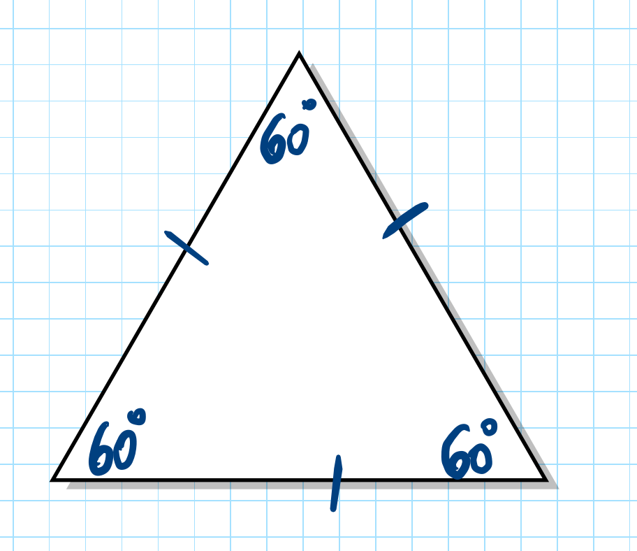
    <ul class="bullets">
      <li>גודל הצלעות לא משנה — כל משולש שווה-צלעות, גדול או קטן, כל זוויותיו 60°</li>
      <li>אם רואים בסרטוט שלוש צלעות שוות — מיד אפשר להסיק שכל זווית = 60°</li>
    </ul>
    <div class="btnrow">
      <button class="btn" onclick="state.sequence=7;startGame()">לתרגול ←</button>
      <button class="btn secondary" onclick="goHome()">חזרה לתפריט</button>
    </div>
  </div>`;
}

function renderLearn8(){
  return `<div class="panel">
    <h2 class="qtitle">משולש שווה-שוקיים</h2>
    <div class="video-wrap">
      <iframe src="https://www.youtube.com/embed/fZPPTBb_pJc" title="משולש שווה-שוקיים" frameborder="0" allow="accelerometer; autoplay; clipboard-write; encrypted-media; gyroscope; picture-in-picture" allowfullscreen></iframe>
    </div>
    <div class="gold-box">משולש שווה-שוקיים = משולש שיש לו שתי צלעות שוות (שוקיים). <strong>זוויות הבסיס שוות זו לזו</strong></div>
    <ul class="bullets">
      <li>השוקיים = שתי הצלעות השוות</li>
      <li>הבסיס = הצלע השלישית (השונה)</li>
      <li>זווית הראש = הזווית בין שני השוקיים</li>
      <li>זוויות הבסיס = שתי הזוויות מול השוקיים — הן תמיד שוות</li>
    </ul>
    <div class="btnrow">
      <button class="btn" onclick="state.sequence=8;startGame()">לתרגול ←</button>
      <button class="btn secondary" onclick="goHome()">חזרה לתפריט</button>
    </div>
  </div>`;
}

function renderLearn9(){
  /* Triangle: A=(25,150), B=(270,150), C=(155,28)
     Computed angles: α@A=43.2°, β@B=46.7°, γ@C≈90.1°
     Sector endpoints at r=28, exactly on the sides:
       A→B dir=(1,0):         P_AB=(53,150)
       A→C dir=(0.729,-0.685): P_AC=(45.4,130.8)
       B→A dir=(-1,0):        P_BA=(242,150)
       B→C dir=(-0.686,-0.728): P_BC=(250.8,129.6)
       C→A dir=(-0.729,0.685): P_CA=(134.6,47.2)
       C→B dir=(0.686,0.728):  P_CB=(174.2,48.4)
     Sweep logic (all interior, small arc):
       α: from P_AB to P_AC, sweep=0 (CCW on screen, going upward)
       β: from P_BA to P_BC, sweep=1 (CW on screen going upward)
       γ: from P_CA to P_CB, sweep=0 (CCW on screen through bottom)
  */
  const triSvg = `<svg viewBox="0 0 295 178" xmlns="http://www.w3.org/2000/svg" style="width:100%;max-width:300px;display:block;margin:0 auto;">
    <rect width="295" height="178" fill="#fff" rx="8"/>
    <style>.tl9{font:700 15px 'Times New Roman',serif;fill:#222}.ta9{font:bold 14px 'Times New Roman',serif}</style>
    <!-- angle sectors (filled, drawn before edges so edges sit on top) -->
    <path d="M25,150 L53,150 A28,28 0 0,0 45.4,130.8 Z" fill="#b8e8b8" stroke="none"/>
    <path d="M270,150 L242,150 A28,28 0 0,1 250.8,129.6 Z" fill="#ffe89a" stroke="none"/>
    <path d="M155,28 L134.6,47.2 A28,28 0 0,0 174.2,48.4 Z" fill="#f8c0c0" stroke="none"/>
    <!-- triangle edges on top of sectors -->
    <line x1="25" y1="150" x2="270" y2="150" stroke="#333" stroke-width="2.2"/>
    <line x1="25" y1="150" x2="155" y2="28" stroke="#333" stroke-width="2.2"/>
    <line x1="270" y1="150" x2="155" y2="28" stroke="#333" stroke-width="2.2"/>
    <!-- sector borders (colored, on top of edges for visibility) -->
    <path d="M53,150 A28,28 0 0,0 45.4,130.8" fill="none" stroke="#3a9c3a" stroke-width="1.8"/>
    <path d="M242,150 A28,28 0 0,1 250.8,129.6" fill="none" stroke="#b88a00" stroke-width="1.8"/>
    <path d="M134.6,47.2 A28,28 0 0,0 174.2,48.4" fill="none" stroke="#c94040" stroke-width="1.8"/>
    <!-- labels at mid-arc, pulled slightly outward -->
    <text x="67" y="137" class="ta9" fill="#2a7a2a" text-anchor="middle">α</text>
    <text x="233" y="137" class="ta9" fill="#8a6600" text-anchor="middle">β</text>
    <text x="155" y="71" class="ta9" fill="#b03030" text-anchor="middle">γ</text>
    <!-- vertex labels -->
    <text x="13" y="168" class="tl9">A</text>
    <text x="272" y="168" class="tl9">B</text>
    <text x="149" y="17" class="tl9">C</text>
  </svg>`;

  /* Proof SVG: exact same α=43.2°, β=46.7°, γ=90.1° assembled on a semicircle.
     Center O=(150,115), r=70. Math angles (CCW from right, SVG: y=cy-r*sin):
       γ: 0°→90.1°,  arc endpoints: (220,115) → (149.8,45.1)≈(150,45)
       β: 90.1°→136.8°, endpoints: (150,45) → (98.9,67.1)≈(99,67)
       α: 136.8°→180°,  endpoints: (99,67) → (80,115)
     All sweep CCW on screen = sweep-flag=0 in SVG.
     Label midpoints at r=48:
       γ mid=45.05°: (150+48*cos45°, 115-48*sin45°)=(184,81)
       β mid=113.45°: (150+48*cos113.5°, 115-48*sin113.5°)=(131,71)
       α mid=158.4°: (150+48*cos158.4°, 115-48*sin158.4°)=(105,97)
  */
  const proofSvg = `<svg viewBox="0 0 300 145" xmlns="http://www.w3.org/2000/svg" style="width:100%;max-width:300px;display:block;margin:0 auto;">
    <rect width="300" height="145" fill="#fff" rx="8"/>
    <style>.pp{font:bold 14px 'Times New Roman',serif}</style>
    <!-- filled sectors -->
    <path d="M150,115 L220,115 A70,70 0 0,0 150,45 Z" fill="#f8c0c0" stroke="none"/>
    <path d="M150,115 L150,45 A70,70 0 0,0 99,67 Z" fill="#ffe89a" stroke="none"/>
    <path d="M150,115 L99,67 A70,70 0 0,0 80,115 Z" fill="#b8e8b8" stroke="none"/>
    <!-- sector borders -->
    <path d="M150,115 L220,115 A70,70 0 0,0 150,45 Z" fill="none" stroke="#c94040" stroke-width="1.5"/>
    <path d="M150,115 L150,45 A70,70 0 0,0 99,67 Z" fill="none" stroke="#b88a00" stroke-width="1.5"/>
    <path d="M150,115 L99,67 A70,70 0 0,0 80,115 Z" fill="none" stroke="#3a9c3a" stroke-width="1.5"/>
    <!-- baseline -->
    <line x1="72" y1="115" x2="228" y2="115" stroke="#333" stroke-width="2"/>
    <!-- labels -->
    <text x="184" y="83" class="pp" fill="#b03030" text-anchor="middle">γ</text>
    <text x="131" y="72" class="pp" fill="#8a6600" text-anchor="middle">β</text>
    <text x="105" y="99" class="pp" fill="#2a7a2a" text-anchor="middle">α</text>
    <text x="150" y="136" style="font:700 12px sans-serif;fill:#333;text-anchor:middle" text-anchor="middle">α + β + γ = 180°</text>
  </svg>`;

  return `<div class="panel">
    <h2 class="qtitle">סכום זוויות במשולש</h2>
    <div class="video-wrap">
      <iframe src="https://www.youtube.com/embed/D5aFj-hMBFI" title="סכום זוויות במשולש" frameborder="0" allow="accelerometer; autoplay; clipboard-write; encrypted-media; gyroscope; picture-in-picture" allowfullscreen></iframe>
    </div>
    <div class="gold-box" style="text-align:center;">סכום שלוש הזוויות בכל משולש הוא תמיד <strong>180°</strong><br><span dir="ltr" style="font-size:1.1em;">α + β + γ = 180°</span></div>
    <div style="display:flex;gap:12px;flex-wrap:wrap;justify-content:center;margin:16px 0;background:#fff;border-radius:10px;padding:12px;">
      <div style="flex:1;min-width:130px;">
        <div style="text-align:center;font-size:12px;color:#555;margin-bottom:6px;">המשולש</div>
        ${triSvg}
      </div>
      <div style="flex:1;min-width:130px;">
        <div style="text-align:center;font-size:12px;color:#555;margin-bottom:6px;">שלוש הזוויות יחד = קו ישר</div>
        ${proofSvg}
      </div>
    </div>
    <ul class="bullets">
      <li>כל משולש — חד-זווית, ישר-זווית או קהה-זווית — סכום זוויותיו תמיד 180°</li>
      <li>אם שתי זוויות ידועות, השלישית = <span dir="ltr">180° − (α + β)</span></li>
    </ul>

    <div style="background:#1e2d3d;border:1.5px solid rgba(245,200,66,0.35);border-radius:10px;padding:14px 16px;margin:14px 0;">
      <div style="font-size:11px;font-weight:800;letter-spacing:1.5px;color:var(--gold);margin-bottom:10px;text-transform:uppercase;">דוגמה</div>
      <div style="display:flex;gap:14px;align-items:center;flex-wrap:wrap;">
        <div style="flex:0 0 auto;">
          <svg viewBox="10 2 200 172" xmlns="http://www.w3.org/2000/svg" style="width:170px;height:auto;display:block;">
            <rect x="10" y="2" width="200" height="172" fill="#fff" rx="6"/>
            <style>.ex9l{font:700 14px 'Times New Roman',serif;fill:#222}.ex9a{font:bold 13px 'Times New Roman',serif}</style>
            <!-- filled sectors -->
            <path d="M30,150 L52,150 A22,22 0 0,0 44.2,133.2 Z" fill="#b8e8b8" stroke="none"/>
            <path d="M190,150 L168,150 A22,22 0 0,1 182.5,129.3 Z" fill="#ffe89a" stroke="none"/>
            <path d="M142,17 L127.8,33.8 A22,22 0 0,0 149.5,37.7 Z" fill="#f8c0c0" stroke="none"/>
            <!-- triangle edges -->
            <line x1="30" y1="150" x2="190" y2="150" stroke="#333" stroke-width="2"/>
            <line x1="30" y1="150" x2="142" y2="17" stroke="#333" stroke-width="2"/>
            <line x1="190" y1="150" x2="142" y2="17" stroke="#333" stroke-width="2"/>
            <!-- sector borders -->
            <path d="M52,150 A22,22 0 0,0 44.2,133.2" fill="none" stroke="#3a9c3a" stroke-width="1.6"/>
            <path d="M168,150 A22,22 0 0,1 182.5,129.3" fill="none" stroke="#b88a00" stroke-width="1.6"/>
            <path d="M127.8,33.8 A22,22 0 0,0 149.5,37.7" fill="none" stroke="#c94040" stroke-width="1.6"/>
            <!-- angle labels with numbers -->
            <text x="63" y="136" class="ex9a" fill="#2a7a2a" text-anchor="middle">50°</text>
            <text x="161" y="130" class="ex9a" fill="#8a6600" text-anchor="middle">70°</text>
            <text x="137" y="54" class="ex9a" fill="#b03030" text-anchor="middle">?</text>
            <!-- vertex labels -->
            <text x="18" y="164" class="ex9l">A</text>
            <text x="185" y="164" class="ex9l">B</text>
            <text x="137" y="11" class="ex9l">C</text>
          </svg>
        </div>
        <div style="flex:1;min-width:140px;font-size:14px;line-height:1.9;color:var(--foam);">
          <div><strong>נתון:</strong> <span dir="ltr">∠A = 50°, ∠B = 70°</span></div>
          <div><strong>מצאו:</strong> <span dir="ltr">∠C = ?</span></div>
          <div style="margin-top:8px;padding:8px 10px;background:rgba(255,255,255,0.07);border-radius:6px;font-size:13px;">
            <div dir="ltr">∠C = 180° − 50° − 70°</div>
            <div dir="ltr">∠C = <strong style="color:var(--gold);">60°</strong></div>
          </div>
        </div>
      </div>
    </div>

    <div class="btnrow">
      <button class="btn" onclick="state.sequence=9;startGame()">לתרגול ←</button>
      <button class="btn" onclick="window.open('../worksheets/angles_seq9_exam.html','_blank')">למבדק שליטה ←</button>
      <button class="btn secondary" onclick="goHome()">חזרה לתפריט</button>
    </div>
  </div>`;
}

const LEARN_TITLES = {
  2:  'כתיב מתמטי של זוויות',
  3:  'סכום והפרש זוויות',
  4:  'חוצה-זווית',
  5:  'זוויות צמודות',
  6:  'זוויות קודקודיות',
  7:  'משולש שווה-צלעות',
  8:  'משולש שווה-שוקיים',
  9:  'סכום זוויות במשולש',
  10: 'סכום זוויות במרובע',
};

function renderLearnPlaceholder(){
  const title = LEARN_TITLES[state.sequence] || '';
  return `<div class="panel">
    <h2 class="qtitle">${title}</h2>
    <div class="coming-soon-panel">
      📹 סרטון הסבר וחומר לימוד יתווספו בקרוב
    </div>
    <div class="btnrow">
      <button class="btn secondary" onclick="goHome()">חזרה לתפריט</button>
    </div>
  </div>`;
}

/* ══════════════════════════════════════
   GAME
══════════════════════════════════════ */

function renderGame(){
  const levels = currentLevels();
  if(state.qi >= levels.length){ state.screen='gameResults'; return renderGameResults(); }
  const q = levels[state.qi];
  const dots = levels.map((_,i)=>`<div class="dot${i<state.qi?' done':i===state.qi?' active':''}"></div>`).join('');
  const opts = q.opts.map((o,i)=>{
    let cls='mc-btn';
    if(state.answered){ if(i===q.ans) cls+=' correct'; else if(i===state.lastAnswer) cls+=' wrong'; }
    return `<button class="${cls}" id="opt${i}" onclick="answerQ(${i})"${state.answered?' disabled':''}>${o}</button>`;
  }).join('');
  const explainHtml = state.answered
    ? `<div class="explain-box">${q.exp}</div><div class="btnrow" style="margin-top:12px;"><button class="btn" onclick="nextQ()">הבא ←</button></div>`
    : `<div class="btnrow" style="margin-top:8px;"><button class="btn secondary" style="font-size:13px;padding:7px 16px;" onclick="skipQ()">דלג ←</button></div>`;
  return `<div class="panel">
    <div class="progressdots">${dots}</div>
    <div class="qmeta">שאלה ${state.qi+1} מתוך ${levels.length}</div>
    <div class="qtitle">${q.q}</div>
    <div class="mc-options">${opts}</div>
    <div class="feedback" id="fb"></div>
    ${explainHtml}
  </div>`;
}

function answerQ(i){
  if(state.answered) return;
  state.answered = true;
  state.lastAnswer = i;
  const q = currentLevels()[state.qi];
  const correct = i===q.ans;
  if(correct) state.score++;
  render();
}

function nextQ(){ state.qi++; state.answered=false; state.lastAnswer=-1; render(); window.scrollTo(0,0); }
function skipQ(){ state.qi++; state.answered=false; state.lastAnswer=-1; render(); window.scrollTo(0,0); }

function renderGameResults(){
  const total = currentLevels().length;
  const pct = Math.round(state.score/total*100);
  const seqUrls = {1:'../worksheets/angles_seq1_exam.html',2:'../worksheets/angles_seq2_exam.html',3:'../worksheets/angles_seq3_exam.html',4:'../worksheets/angles_seq4_exam.html',5:'../worksheets/angles_seq5_exam.html',6:'../worksheets/angles_seq6_exam.html',7:'../worksheets/angles_seq7_exam.html',8:'../worksheets/angles_seq8_exam.html',9:'../worksheets/angles_seq9_exam.html'};
  const examUrl = seqUrls[state.sequence] || '';
  const examBtn = examUrl
    ? `<button class="btn" onclick="window.open('${examUrl}','_blank')">למבדק שליטה ←</button>`
    : '';
  return `<div class="panel" style="text-align:center;">
    <h2 class="qtitle">סיימתם את התרגול!</h2>
    <div class="scorebig">${state.score} / ${total}</div>
    <div style="font-size:15px;opacity:.75;margin-bottom:18px;">${pct}% תשובות נכונות</div>
    <div style="font-size:15px;margin-bottom:22px;">עכשיו אפשר לבדוק את הידע שלכם במבדק שליטה.</div>
    <div class="btnrow">
      ${examBtn}
      <button class="btn secondary" onclick="goHome()">חזרה לתפריט</button>
    </div>
  </div>`;
}

render();
</script>
<footer style="text-align:center;padding:24px 0 14px;font-size:11px;color:#9CA3AF;font-family:Rubik,sans-serif;">© כל הזכויות שמורות לחן מרגלית</footer>
</body>
</html>
